🛰️ SETI：寻找外星人
SETI: Search for Extraterrestrial Intelligence · 设计：Tomáš Holek · CGE 出版 · 1–4 人（中文版规则书全文转录，含单人游戏规则）
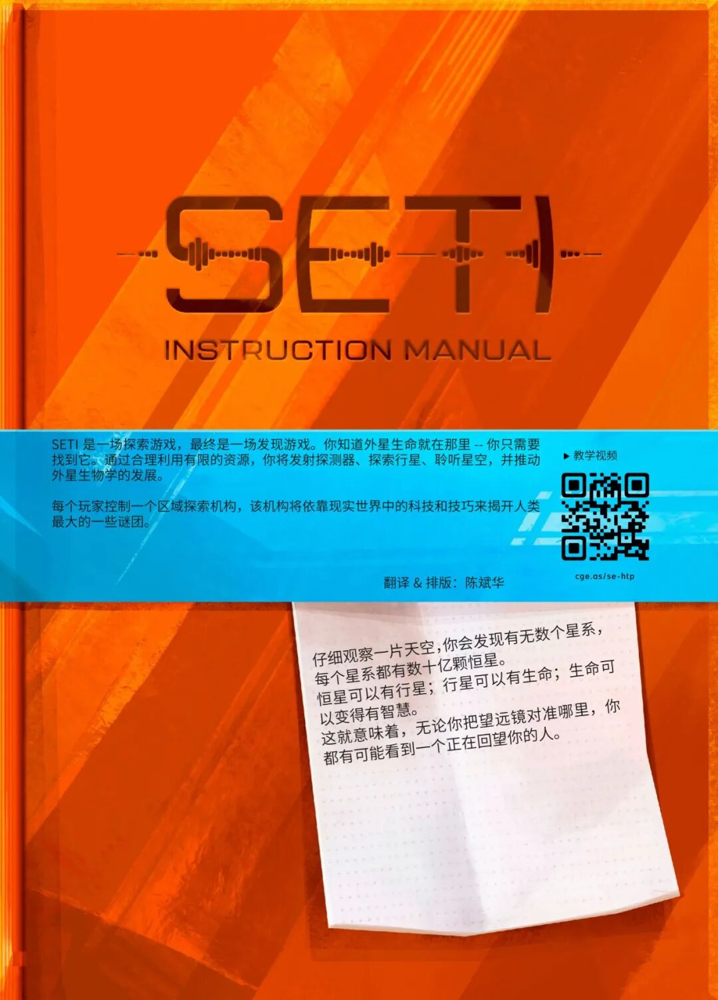
本页整理自微信公众号「桌游怎么玩」寻找外星人【桌游规则】SETI（1–14）与《单人游戏规则》SETI（15–28）两篇文章发布的《SETI：寻找外星人》(SETI: Search for Extraterrestrial Intelligence，Tomáš Holek 设计，CGE 出版) 中文规则书扫描件（翻译 & 排版：陈斌华）。全书 28 页逐页全文转录（P.1 封面、P.2–21 多人主规则、P.22–26 单人游戏规则、P.27 任务/游戏结束/CREDITS、P.28 规则提示与 FAQ 参考插页），原书扫描图随文嵌入——点击任意图片即可放大查看。规则内容归 CGE 及版权方所有，转录仅供个人学习查阅。
整理说明：〔图标：……〕表示此处为印刷图标/令牌图片，非文字；〔图 …〕说明为整理所拟。组件清单已逐项核对加和——P.2 玩家配件明示数量合计 99 件，P.3 公共配件 48+12+1+2+4+138+30+30+70＝335 件、外星人配件五组 19+19+19+16+15＝88 件。原书排印问题较多，均照录并加〔原文如此〕：破折号多处印作「--」（P.1/P.6/P.7/P.15/P.16/P.19）；P.4「数据」节序号与上节重复印作 5、「每颗的恒星」「外星物种板」；P.5「科技板块洗牌」「轮次过关后」；P.8「行星版图上的数字不属于“太空中的探测器”」主语不谐；P.9「宣传图标 的」内空格；P.10「覆盖区域」疑漏字；P.11 两处「登陆器」与通篇「着陆器」不一；P.12「标记 1 信号。(详见下页)。」标点重复；P.13「完成扇形」「赢得该区」「因为橙色最后一个标记。」等残句漏字、「重置扇区」两条标注重复；P.14「塞进一张牌作为收入」、括号与句号叠用；P.15「如果当你打出……时」「放在面前」疑漏「你」；P.16「(见下框)。」句号重复、「放置数据」疑漏「指示物」、「图形」「转动」用词不一；P.17「这已经适用于」「费用 与」「描绘的奖励」「匹配扇形」；P.18「购买卡牌」栏作「3 点宣传」而他处作「信誉」；P.19「将自己选择一张牌」「结算收入问题」「补充替换」；P.20「外星人版图」与通篇「外星版图」不一、「进行游戏」搭配生硬；P.21「每种科技中你拥有最少的科技得分」；P.22「给对手一种颜色所有配件」脱「的」、翻开 3 块板块后接「这将是你的第一个目标」；P.23「信誉、能量和卡牌」之「和」、「通过或帮助发现」语句不通、「对手也会在进度轨道上前进」整句连印两次；P.24「卡片/卡牌」「2 点奖励/2 分」用词不一；P.25「两个第一个区域」「标记最多标记的区域」、扇区/区段/区域混用；P.26「)。」叠句、「进度轨」疑漏「道」；P.27 测试者「Krauz」「Sťař」拼写罕见；P.28 问句作「区域」答句作「扇区」。扫描件右缘裁切致 P.28 三处行尾字残缺（「两个中〔?〕里程碑」「两个中立〔?〕里程碑」「一个能量〔?〕换一个信誉」），已标〔?〕。P.2 单人两组件 ITEM 编号、部分卡面英文风味小字及图中行星徽章二进制小数字无法确辨，均如实标注。〔原文此段印于底框/彩色字体〕等为整理对版式的客观描述。
# 规则书第 1 页（扫描图 01)
SETI
INSTRUCTION MANUAL
〔转录注:以上为封面主视觉文字——"SETI" 为风格化 LOGO 大字,其中末字母 I 以声波状符号呈现;"INSTRUCTION MANUAL" 为其下一行大写英文。〕
封面简介（青蓝色横幅文字）
SETI 是一场探索游戏，最终是一场发现游戏。你知道外星生命就在那里 --〔原文如此〕你只需要找到它。通过合理利用有限的资源，你将发射探测器、探索行星、聆听星空，并推动外星生物学的发展。
每个玩家控制一个区域探索机构，该机构将依靠现实世界中的科技和技巧来揭开人类最大的一些谜团。
翻译 & 排版：陈斌华
► 教学视频
〔二维码,其下方印有小字:cge.as/se-htp〕
便签纸引文（白色便签，打印体，随纸张折角略倾斜；按印刷行逐行转录，保留原文换行）
仔细观察一片天空，〔原文如此〕你会发现有无数个星系，
每个星系都有数十亿颗恒星。
恒星可以有行星；行星可以有生命；生命可
以变得有智慧。
这就意味着，无论你把望远镜对准哪里，你
都有可能看到一个正在回望你的人。
〔图:封面为橙色放射状斜条纹背景,左缘可见书脊装订阴影;上半部居中为深棕色 "SETI" 大字 LOGO,字间穿插点状声波/无线电信号装饰线,下方为 "INSTRUCTION MANUAL" 字样;页面中部横贯一条青蓝色横幅,右侧印 "► 教学视频" 字样与一个二维码(下注 cge.as/se-htp),横幅右下部有斜向浅色光带;横幅下方偏右斜贴一张折角白色便签纸,上有打印文字。〕
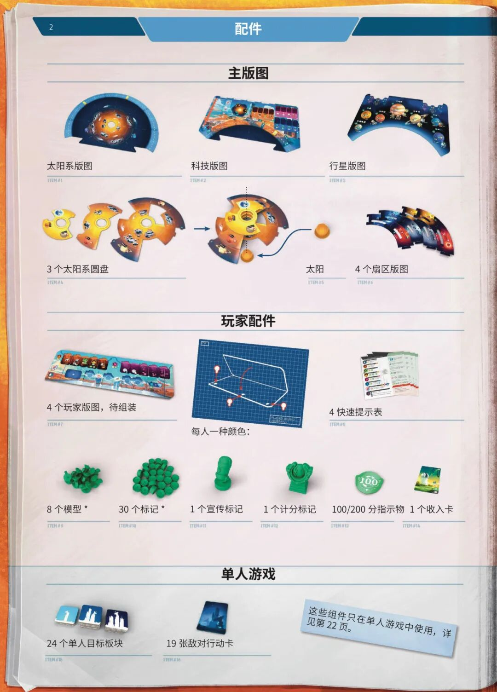
# 规则书第 2 页（扫描图 02)
页眉：左端蓝色小标签内页码「2」；中央蓝色标题横幅：「配件」
主版图
- 太阳系版图（ITEM #1)
- 科技版图（ITEM #2)
- 行星版图（ITEM #3)
- 3 个太阳系圆盘（ITEM #4)
- 太阳（ITEM #5)
- 4 个扇区版图（ITEM #6)
玩家配件
- 4 个玩家版图，待组装（ITEM #7)
- 4 快速提示表〔原文如此:疑缺量词〕(ITEM #8)
每人一种颜色：
- 8 个模型 *(ITEM #9)
- 30 个标记 *(ITEM #10)
- 1 个宣传标记（ITEM #11)
- 1 个计分标记（ITEM #12)
- 100/200 分指示物（ITEM #13)
- 1 个收入卡（ITEM #14)
单人游戏
- 24 个单人目标板块（ITEM #1〔?〕)
- 19 张敌对行动卡（ITEM #1〔?〕)
- 蓝色便签框文字：「这些组件只在单人游戏中使用，详见第 22 页。」
〔图: 页首通栏标题横幅,深浅两色蓝色标签,中央为章节名「配件」,左端小标签印页码「2」〕
〔图: 主版图区——三张版图照片:左为弧形太阳系版图(蓝橙配色,中央太阳系俯视);中为人字形科技版图(含彩轨与卡牌槽位);右为弧形行星版图(深蓝底,印多颗行星)〕
〔图: 三块黄色太阳系圆盘摊开照片,中间以箭头指向三者叠合组装后的立体图,圆盘中央插入橙色圆球(太阳),旁边有箭头自右上的太阳球体引下示意安装位置;右侧为四张弧形扇区版图叠扇形排开照片(蓝、黑、红等深色底)〕
〔图: 玩家配件区——左为长条形玩家版图成品照片(顶部一排彩色记录槽,紫、蓝色轨等);中为蓝底白线网格的设计图纸样式折叠示意图,红色箭头示折叠方向与三个灯泡形锁扣位置,右下角小字标签(字迹过小无法辨认);右为一叠快速提示表照片〕
〔图: 同色配件一排照片(图中为绿色一套):零散模型堆、一堆圆片标记、圆柱形宣传标记(西洋棋子状)、带底座的计分标记、印「100」字样的圆形分数指示物、一张收入卡〕
〔图: 单人游戏区——左为三块叠放的单人目标板块照片(白底剪影图案);中为一张深蓝色卡背的敌对行动卡照片;右为倾斜粘贴的蓝色便签框,内印提示文字〕
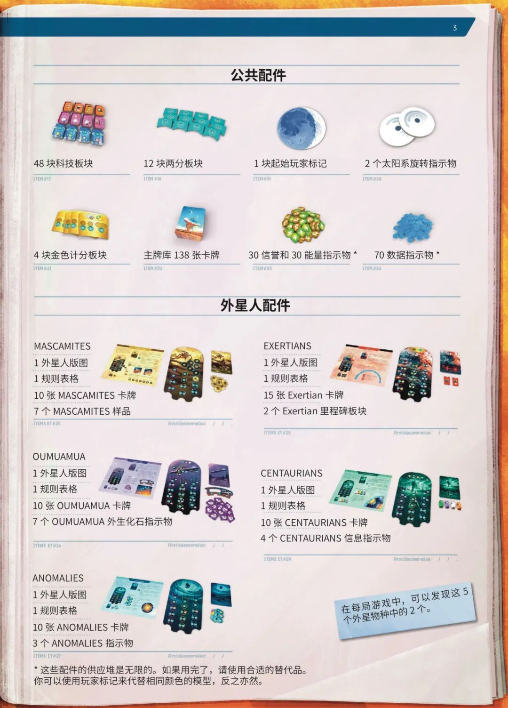
# 规则书第 3 页（扫描图 03)
公共配件
| 数量 | 物品 | 图下小字编号 |
|---|---|---|
| 48 块 | 科技板块 | ITEM #17 |
| 12 块 | 两分板块 | ITEM #18 |
| 1 块 | 起始玩家标记 | ITEM #19 |
| 2 个 | 太阳系旋转指示物 | ITEM #20 |
| 4 块 | 金色计分板块 | ITEM #21 |
| 主牌库 138 张 | 卡牌 | ITEM #22 |
| 30 信誉和 30 能量 | 指示物 * | ITEM #23 |
| 70 | 数据指示物 * | ITEM #24 |
外星人配件
MASCAMITES
- 1 外星人版图
- 1 规则表格
- 10 张 MASCAMITES 卡牌
- 7 个 MASCAMITES 样品
（本组行末小字：左 ITEMS ET #26;右 First discovered on: ____ / ____ / ____ .)
EXERTIANS
- 1 外星人版图
- 1 规则表格
- 15 张 Exertian 卡牌
- 2 个 Exertian 里程碑板块
（本组行末小字：左 ITEMS ET #28〔?〕;右 First discovered on: ____ / ____ / ____ .)
OUMUAMUA
- 1 外星人版图
- 1 规则表格
- 10 张 OUMUAMUA 卡牌
- 7 个 OUMUAMUA 外生化石指示物
（本组行末小字：左 ITEMS ET #26;右 First discovered on: ____ / ____ / ____ .)
CENTAURIANS
- 1 外星人版图
- 1 规则表格
- 10 张 CENTAURIANS 卡牌
- 4 个 CENTAURIANS 信息指示物
（本组行末小字：左 ITEMS ET #29;右 First discovered on: ____ / ____ / ____ .)
ANOMALIES
- 1 外星人版图
- 1 规则表格
- 10 张 ANOMALIES 卡牌
- 3 个 ANOMALIES 指示物
（本组行末小字：左 ITEMS ET #27;右 First discovered on: ____ / ____ / ____ .)
便签（蓝色便签纸样式）：在每局游戏中，可以发现这 5 个外星物种中的 2 个。
脚注：
- 这些配件的供应堆是无限的。如果用完了，请使用合适的替代品。
你可以使用玩家标记来代替相同颜色的模型，反之亦然。
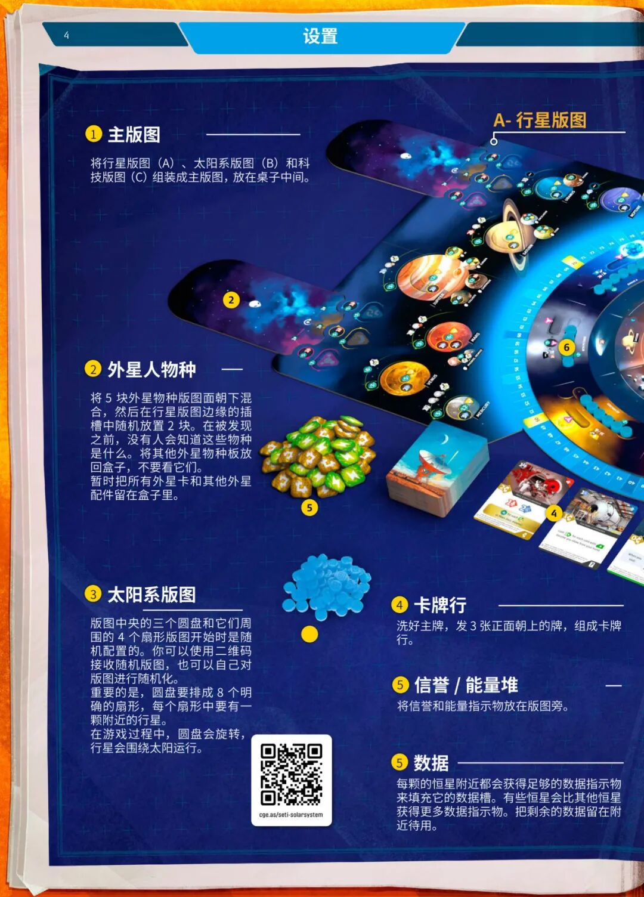
# 规则书第 4 页（扫描图 04)
页面顶部横幅（左上圆角框内印页码「4」，横幅中央为章节名）：
设置
1 主版图
将行星版图（A）、太阳系版图（B）和科技版图（C）组装成主版图，放在桌子中间。
页面右上方另有橙色标注：A- 行星版图（附引线指向右侧行星版图照片）。
2 外星人物种
将 5 块外星物种版图面朝下混合，然后在行星版图边缘的插槽中随机放置 2 块。在被发现之前，没有人会知道这些物种是什么。将其他外星物种板〔原文如此〕放回盒子，不要看它们。
暂时把所有外星卡和其他外星配件留在盒子里。
3 太阳系版图
版图中央的三个圆盘和它们周围的 4 个扇形版图开始时是随机配置的。你可以使用二维码接收随机版图，也可以自己对版图进行随机化。
重要的是，圆盘要排成 8 个明确的扇形，每个扇形中要有一颗附近的行星。
在游戏过程中，圆盘会旋转，行星会围绕太阳运行。
（第 3 节文字右下方印有方形二维码，二维码下方注小字：cge.as/seti-solarsystem)
4 卡牌行
洗好主牌，发 3 张正面朝上的牌，组成卡牌行。
5 信誉 / 能量堆
将信誉和能量指示物放在版图旁。
5 数据
〔原文如此:序号疑应为 6〕
每颗的恒星〔原文如此〕附近都会获得足够的数据指示物来填充它的数据槽。有些恒星会比其他恒星获得更多数据指示物。把剩余的数据留在附近待用。
〔图:页面主体为游戏设置实景照片:右上方橙色标题"A- 行星版图"以白色引线指向前方摊开的行星版图照片(深蓝色底,印有行星、轨道与外星物种插槽),照片版图上叠有黄色数字圆点「2」(左侧太阳系版图翼部)和「6」(中央圆盘附近);照片中部偏左为绿/金色异形外星物种板块堆,其下方有黄色数字圆点「5」;其右为一叠背面印有望远镜图案的卡牌和数张摊开的主牌,牌上有黄色数字圆点「4」;卡牌下方为蓝色八角形数据指示物堆,堆旁有一枚无数字的纯黄色圆点;页面顶部为深蓝色横幅,左上圆角框内印页码「4」,横幅中央为章节名「设置」。〕
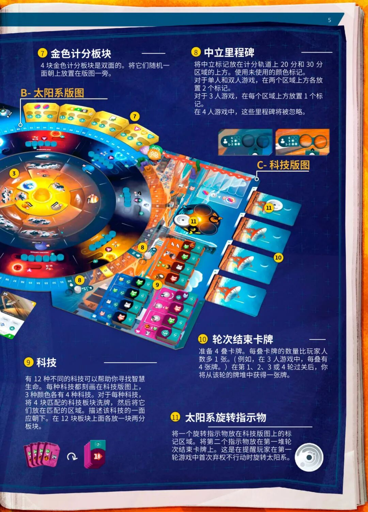
# 规则书第 5 页（扫描图 05）
⑦ 金色计分板块
4 块金色计分板块是双面的。将它们随机一面朝上放置在版图一旁。
B- 太阳系版图
⑧ 中立里程碑
将中立标记放在计分轨道上 20 分和 30 分区域的上方。使用未使用的颜色标记。
对于单人和双人游戏，在两个区域上方各放置 2 个标记。
对于 3 人游戏，在每个区域上方放置 1 个标记。
在 4 人游戏中，这些里程碑将被忽略。
C- 科技版图
⑨ 科技
有 12 种不同的科技可以帮助你寻找智慧生命。每种科技都刻画在科技版图上，3 种颜色各有 4 种科技。对于每种科技，将 4 块匹配的科技板块洗牌〔原文如此〕，然后将它们放在匹配的区域。描述该科技的一面应朝下。在 12 块板块上面各放一块两分板块。
⑩ 轮次结束卡牌
准备 4 叠卡牌。每叠卡牌的数量比玩家人数多 1 张。（例如，在 3 人游戏中，每叠有 4 张牌。）在第 1、2、3 或 4 轮过关后〔原文如此〕，你将从该轮的牌堆中获得一张牌。
⑪ 太阳系旋转指示物
将一个旋转指示物放在科技版图上的标记区域。将第二个指示物放在第一堆轮次结束卡牌上。这是在提醒玩家在第一轮游戏中首次弃权不行动时旋转太阳系。
〔图：深蓝底色整页；页面上半至中部为游戏组件大照片，含左侧圆形太阳系版图（B）与右侧科技版图（C），照片上散布黄色圆形编号标记：7、3、8（两处）、9、10、11（两处）；⑧ 节下方有两张里程碑标记特写小图（一橙一深色背景，上有数字）；⑨ 节下方有数张板块小图与一个旋转箭头符号；⑪ 节右侧有一枚银灰色圆形旋转指示物照片。〕
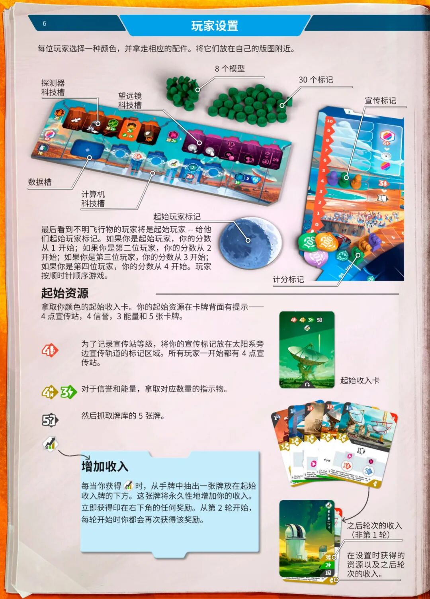
# 规则书第 6 页（扫描图 06）
玩家设置
每位玩家选择一种颜色，并拿走相应的配件。将它们放在自己的版图附近。
图注（版图与配件照片上的指引文字）：
- 探测器科技槽
- 望远镜科技槽
- 8 个模型
- 30 个标记
- 宣传标记
- 数据槽
- 计算机科技槽
- 起始玩家标记
- 计分标记
最后看到不明飞行物的玩家将是起始玩家 --〔原文如此〕 给他们起始玩家标记。如果你是起始玩家，你的分数从 1 开始；如果你是第二位玩家，你的分数从 2 开始；如果你是第三位玩家，你的分数从 3 开始；如果你是第四位玩家，你的分数从 4 开始。玩家按顺时针顺序游戏。
起始资源
拿取你颜色的起始收入卡。你的起始资源在卡牌背面有提示——4 点宣传站，4 信誉，3 能量和 5 张卡牌。
- 〔图标：宣传站 4〕 为了记录宣传站等级，将你的宣传标记放在太阳系旁边宣传轨道的标记区域。所有玩家一开始都有 4 点宣传站。
- 〔图标：信誉 4、能量 3〕 对于信誉和能量，拿取对应数量的指示物。
- 〔图标：卡牌 5〕 然后抓取牌库的 5 张牌。
- 〔图标：带箭头图表〕（指向下方“增加收入”栏目）
增加收入
每当你获得〔收入增加图标〕时，从手牌中抽出一张牌放在起始收入牌的下方。这张牌将永久性地增加你的收入。立即获得印在右下角的任何奖励。从第 2 轮开始，每轮开始时你都会再次获得该奖励。
图注（右侧卡牌照片上的指引文字）：
- 起始收入卡
- 之后轮次的收入（非第 1 轮）
- 在设置时获得的资源以及之后轮次的收入。
〔图：页面主体为玩家版图（探测器/望远镜/计算机科技槽、数据槽）、一堆绿色模型与标记（8 个模型、30 个标记）、右侧计分/宣传板（宣传标记、计分标记）、一块月球图版的起始玩家标记照片；下半部分左侧为带图标的起始资源条目与浅蓝色"增加收入"说明框，右侧为起始收入卡与数张收入卡的照片及标注。〕
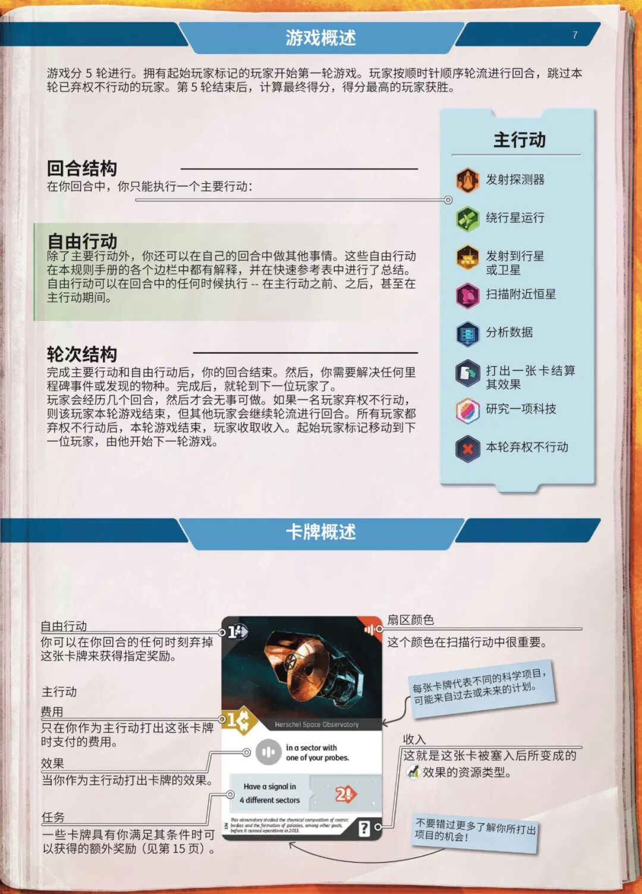
# 规则书第 7 页（扫描图 07）
游戏概述
（本条为页首通栏章节标题条，右端印页码"7"。）
游戏分 5 轮进行。拥有起始玩家标记的玩家开始第一轮游戏。玩家按顺时针顺序轮流进行回合，跳过本轮已弃权不行动的玩家。第 5 轮结束后，计算最终得分，得分最高的玩家获胜。
回合结构
在你回合中，你只能执行一个主要行动：
自由行动
（绿色底纹边栏框。）
除了主要行动外，你还可以在自己的回合中做其他事情。这些自由行动在本规则手册的各个边栏中都有解释，并在快速参考表中进行了总结。自由行动可以在回合中的任何时候执行 -- 〔原文如此〕在主行动之前、之后，甚至在主行动期间。
主行动
（右侧浅蓝色标签形列表框，每项前有一个六边形彩色图标；有一条折线引线从上文“你只能执行一个主要行动：”一句指向本框。）
- 发射探测器
- 绕行星运行
- 发射到行星或卫星
- 扫描附近恒星
- 分析数据
- 打出一张卡结算其效果
- 研究一项科技
- 本轮弃权不行动
轮次结构
完成主要行动和自由行动后，你的回合结束。然后，你需要解决任何里程碑事件或发现的物种。完成后，就轮到下一位玩家了。
玩家会经历几个回合，然后才会无事可做。如果一名玩家弃权不行动，则该玩家本轮游戏结束，但其他玩家会继续轮流进行回合。所有玩家都弃权不行动后，本轮游戏结束，玩家收取收入。起始玩家标记移动到下一位玩家，由他开始下一轮游戏。
卡牌概述
（本条为下半页通栏章节标题条。）
以下为一张示例卡牌的标注说明，各标注以引线指向卡牌对应部位。
自由行动
你可以在你回合的任何时刻弃掉这张卡牌来获得指定奖励。
主行动
费用
只在你作为主行动打出这张卡牌时支付的费用。
效果
当你作为主行动打出卡牌的效果。
任务
一些卡牌具有你满足其条件时可以获得的额外奖励（见第 15 页）。
扇区颜色
这个颜色在扫描行动中很重要。
（浅蓝色斜置便签框）每张卡牌代表不同的科学项目，可能来自过去或未来的计划。
收入
这就是这张卡被塞入后所变成的〔柱状上升图表状小图标〕效果的资源类型。
（浅蓝色斜置便签框）不要错过更多了解你所打出项目的机会！
示例卡牌文字（卡面原文为英文）
- 卡名：Herschel Space Observatory
- 卡面左上角：1〔圆形图标，内含向右箭头及碎块状图案〕
- 费用徽章（金色）：1〔齿轮／螺母状图标〕
- 效果上半：〔信号图标〕 in a sector with one of your probes.
- 任务框：Have a signal in 4 different sectors
- 任务奖励：2〔红色菱形标签状图标〕
- 卡面 flavor 小字：This observatory studied the chemical composition of cosmic bodies and the formation of galaxies, among other goals, before it ceased operations in 2013.
- 卡面左下角（flavor 左侧）：竖排极小印刷字“1M”〔旋转 90° 的小字，疑为印次标记〕
- 卡面右下角：？〔黑色方块内白色问号，为图鉴编号角标〕
〔图: 页面上部为"游戏概述／回合结构／轮次结构"文字区，右侧为浅蓝色"主行动"标签形列表框（八项，各配六边形彩色图标）；下半页为"卡牌概述"章节条，中央是一张 Herschel Space Observatory 示例卡牌（太空望远镜照片图），四周环绕中文标注引线与两个浅蓝色斜置便签框；卡牌右上角为红色三角扇区颜色角标（内含白色信号条图标）。〕
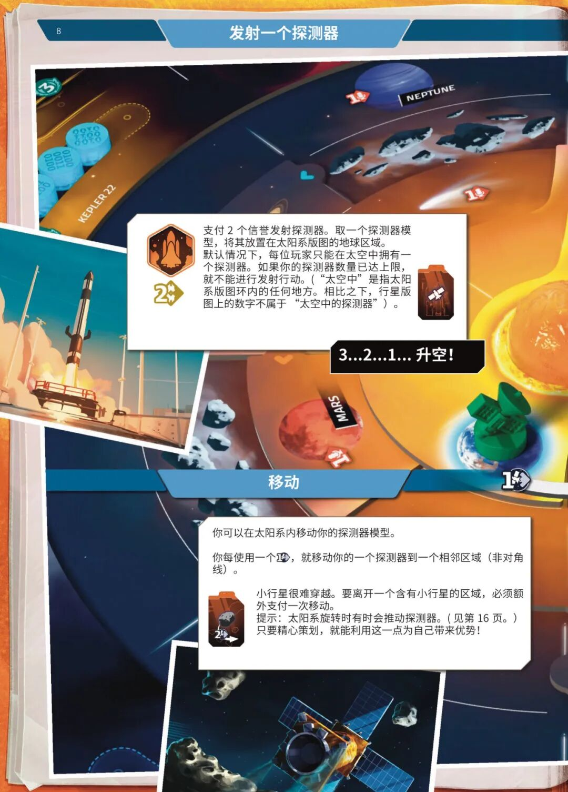
# 规则书第 8 页（扫描图 08)
发射一个探测器
〔图标:六边形内橙色火箭剪影;其下方为费用图标,印有数字"2"与探测器/向上箭头图案〕
支付 2 个信誉发射探测器。取一个探测器模型，将其放置在太阳系版图的地球区域。
默认情况下，每位玩家只能在太空中拥有一个探测器。如果你的探测器数量已达上限，就不能进行发射行动。（“太空中”是指太阳系版图环内的任何地方。相比之下，行星版图上的数字〔原文如此〕不属于“太空中的探测器”）。
〔图:本段右侧配图为一个橙色探测器令牌,令牌上印有白色卫星图案〕
3...2...1... 升空！
移动
〔本标题右侧印有图标:数字"1"与探测器/向右箭头图案〕
你可以在太阳系内移动你的探测器模型。
你每使用一个〔图标:数字"1"与探测器/向右箭头图案〕，就移动你的一个探测器到一个相邻区域（非对角线）。
〔图:本段左侧配图为一个橙色探测器令牌,令牌上印有小行星图案,下方印有数字"2"与向右箭头〕
小行星很难穿越。要离开一个含有小行星的区域，必须额外支付一次移动。
提示：太阳系旋转时有时会推动探测器。（见第 16 页。）只要精心策划，就能利用这一点为自己带来优势！
版图照片中的印刷文字
页面多处以太阳系版图实拍照片作背景装饰，照片中可辨认的版图印刷文字逐字照录如下：
- NEPTUNE
- KEPLER 22
- MARS
页面纯视觉元素
〔图:页面顶部为太阳系版图外环照片,可见海王星区域、小行星板块、蓝色信誉方块堆与多枚印有数字的费用令牌〕
〔图:页面左中部为运载火箭在发射台点火升空的照片〕
〔图:页面中部为太阳系版图内环照片,可见火星区域、小行星板块、绿色探测器模型与地球区域〕
〔图:页面底部为小行星带中一颗探测器(卫星)的照片〕
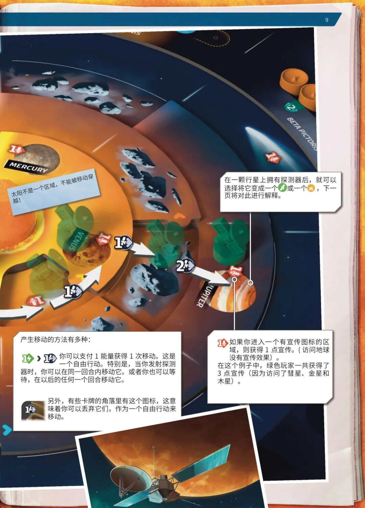
# 规则书第 9 页（扫描图 09)
本页无章节标题，整页为游戏图板特写照片，上面叠加 4 个说明框（1 个便签样式 + 3 个白框）。以下按版面位置转录。
便签说明框（左上，蓝灰色便签样式）
太阳不是一个区域，不能被移动穿越！
说明框（右上）
在一颗行星上拥有探测器后，就可以选择将它变成一个〔图标:绿色圆形,内有斜置的白色探测器图案〕或一个〔图标:橙色圆形,内有探测器正面图案〕，下一页将对此进行解释。
说明框（左下）
产生移动的方法有多种：
〔图标:绿色"1⚡"(1 能量)〕 > 〔图标:深蓝底白色"1"叠探测器箭头(1 次移动)〕 你可以支付 1 能量获得 1 次移动。这是一个自由行动。特别是，当你发射探测器时，你可以在同一回合内移动它。或者你也可以等待，在以后的任何一个回合移动它。
〔图:一张卡牌的角部示意,角上印有"1 次移动"图标〕另外，有些卡牌的角落里有这个图标，这意味着你可以丢弃它们，作为一个自由行动来移动。
说明框（右下）
〔图标:红色"1"叠话筒图案(1 点宣传)〕如果你进入一个有宣传图标 〔原文如此〕的区域，则获得 1 点宣传。（访问地球没有宣传效果）。
在这个例子中，绿色玩家一共获得了 3 点宣传（因为访问了彗星、金星和木星）。
纯视觉元素
〔图:整页背景为太阳系游戏图板的特写照片:内侧橙色轨道上有水星(MERCURY 黑色标签)与相邻的红色"1"话筒(宣传)徽章,金星(VENUS 绿色标签)旁有红色"1"宣传徽章和绿色探测器模型,外侧可见木星(JUPITER 黑色标签)及其红色"1"宣传徽章,右上方为"BETA PICTORIS"扇区(带绿色"2"徽章)和一条带彗尾的彗星(旁有红色"1"宣传徽章),中部横贯小行星带,散布多个绿色探测器模型,左下方轨道上另有一枚红色"1"话筒(宣传)徽章;三支白色粗箭头分别标注"1""1""2"的深蓝色"1 次移动"图标,表示探测器的移动路线;页面最上缘有一黄色标签残影,仅见"…NS"残字(末字母"S"清晰,前一字母仅存下半、似"N",不完全可辨;疑为星名标签被页面边缘裁切)〕
〔图:页面底部为一张插画:一带碟形天线与蓝绿色太阳能板的探测器飞越一颗橙色行星〕
〔图:页面左缘中部有一个青色">"形装饰折角〕
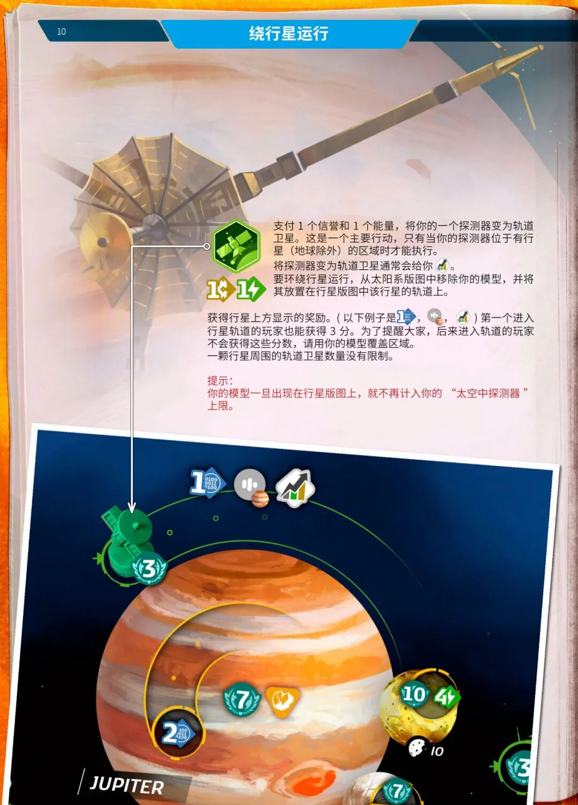
# 规则书第 10 页（扫描图 10)
绕行星运行
〔页面中部偏左:绿色六边形图标,内有白色探测器(卫星)图案;该图标以一条白色引线(末端箭头)向下指向页面底部照片中的一枚绿色探测器模型。〕〔图标左侧费用:1〔黄色箭头六边形,内有白色带环星球图案〕 1〔绿色箭头六边形,内有白色闪电图案〕〕
支付 1 个信誉和 1 个能量，将你的一个探测器变为轨道卫星。这是一个主要行动，只有当你的探测器位于有行星（地球除外）的区域时才能执行。
将探测器变为轨道卫星通常会给你〔图标:白底六边形,内有黑色上升箭头与绿黄色柱状图〕。
要环绕行星运行，从太阳系版图中移除你的模型，并将其放置在行星版图中该行星的轨道上。
获得行星上方显示的奖励。（以下例子是1〔图标:蓝色五边形徽章,白色数字"1",旁有白色圆圈及二进制数字图案〕,〔图标:灰色圆形,内有白色竖条,下有一枚橙色星球图案〕,〔图标:白底六边形,内有黑色上升箭头与绿黄色柱状图〕）第一个进入行星轨道的玩家也能获得 3 分。为了提醒大家，后来进入轨道的玩家不会获得这些分数，请用你的模型覆盖区域〔原文如此〕。
一颗行星周围的轨道卫星数量没有限制。
提示：
你的模型一旦出现在行星版图上，就不再计入你的“太空中探测器”上限。
〔图:页面顶部为跨页背景插图——一枚探测器/卫星在一颗行星(疑为土星)上方飞行,太阳能帆板与碟形天线可见。页面下半部为一整幅木星行星版图照片:深蓝底色上为橙白条纹的木星及多层轨道圈;绿色探测器模型位于外层轨道左上方,页面中部的绿色六边形行动图标以白色引线箭头指向该模型;探测器旁有绿色月桂叶"3"徽章。轨道上方一排奖励图标:蓝色五边形"1"徽章(白色圆圈内三行二进制数字,似"0100/0011/?100",末行首位被数字遮挡,无法完全辨认)、灰色圆形图标(内有两条白色竖条,下缘有一枚橙色星球)、白底六边形图标(黑色上升箭头与绿黄色柱状图)。木星内部有一枚黄圈深色圆章,内为蓝色五边形"2"徽章(同样的二进制数字图案,无法完全辨认);木星中央有绿色月桂叶"7"徽章,旁边一枚橙色五边形徽章(内为白色不规则圆形图案,含橙色碎块,形似岩块/小行星)。右侧为一颗黄色卫星(带陨石坑),其上有绿色月桂叶"10"徽章与绿色闪电"4"徽章;卫星下方有白色小卫星(陨石坑)图案及文字"IO"(木卫一名称)。照片下缘中央露出一颗浅色冰质卫星局部,带绿色月桂叶"7"徽章;右下角边缘露出一枚绿色圆环内月桂叶"3"徽章局部(数字部分可见)。〕
示例图内文字（照片及图标内可见文字与数字）
- JUPITER
- 1、2（蓝色五边形徽章数字）
- 3、7、10（绿色月桂叶徽章数字，共出现：3、7、10、7、3)
- 4（绿色闪电徽章数字）
- IO（黄色卫星下方白色小卫星图案旁文字，为木卫一名称"IO"，非数字）
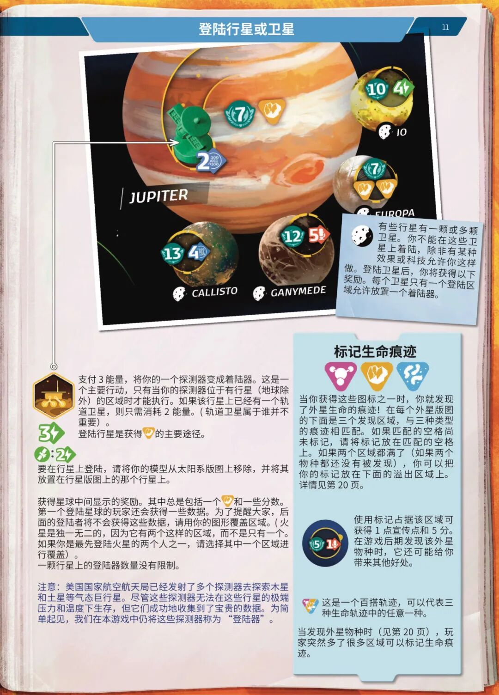
# 规则书第 11 页（扫描图 11)
登陆行星或卫星
〔页面顶部横幅标题:登陆行星或卫星;右上角印页码"11"〕
〔图中右侧浅蓝色说明框,框首有月球图案:〕
有些行星有一颗或多颗卫星。你不能在这些卫星上着陆，除非有某种效果或科技允许你这样做。登陆卫星后，你将获得以下奖励。每个卫星只有一个登陆区域允许放置一个着陆器。
〔左侧正文,段首有六边形着陆器图案图标:〕
支付 3 能量，将你的一个探测器变成着陆器。这是一个主要行动，只有当你的探测器位于有行星（地球除外）的区域时才能执行。如果该行星上已经有一个轨道卫星，则只需消耗 2 能量。（轨道卫星属于谁并不重要）。
登陆行星是获得〔生命痕迹图标〕的主要途径。
〔图标行:3⚡〕
〔图标行:⚡:2⚡〕
要在行星上登陆，请将你的模型从太阳系版图上移除，并将其放置在行星版图上的那个行星上。
获得星球中间显示的奖励。其中总是包括一个〔生命痕迹图标〕和一些分数。第一个登陆星球的玩家还会获得一些数据。为了提醒大家，后面的登陆者将不会获得这些数据，请用你的图形覆盖区域。（火星是独一无二的，因为它有两个这样的区域，而不是只有一个。如果你是最先登陆火星的两个人之一，请选择其中一个区域进行覆盖）。
一颗行星上的登陆器数量没有限制。〔原文如此〕
注意：美国国家航空航天局已经发射了多个探测器去探索木星和土星等气态巨行星。尽管这些探测器无法在这些行星的极端压力和温度下生存，但它们成功地收集到了宝贵的数据。为简单起见，我们在本游戏中仍将这些探测器称为“登陆器”。〔原文如此〕
标记生命痕迹
〔浅蓝色方框标题,下方横排三个盾形(倒三角)图标:粉色、黄色、蓝色,各含不同的生命痕迹图案〕
当你获得这些图标之一时，你就发现了外星生命的痕迹！在每个外星版图的下面是三个发现区域，与三种类型的痕迹相匹配。如果匹配的空格尚未标记，请将标记放在匹配的空格上。如果两个区域都满了（如果两个物种都还没有被发现），你可以把你的标记放在下面的溢出区域上。详情见第 20 页。
〔图标:深蓝色圆形,内有徽章"5"和"1","1"徽章带麦克风图案〕使用标记占据该区域可获得 1 点宣传点和 5 分。在游戏后期发现该外星物种时，它还可能给你带来其他好处。
〔图标:粉/黄/蓝三色拼接盾形图案〕这是一个百搭轨迹，可以代表三种生命轨迹中的任意一种。
当发现外星物种时（见第 20 页），玩家突然多了很多区域可以标记生命痕迹。
〔图:页面主体为木星(JUPITER)系统照片式插画。绿色着陆器模型立于木星旁,带有蓝色六边形徽章"2"(内有二进制数字图案),一条白色箭头从左侧指向该着陆器,并有细线从着陆器向下引至左下正文段落。木星旁有徽章"7"(青绿色,带生命痕迹图案)和一个黄色盾形生命痕迹图标。右上为一颗卫星(印名"IO"),徽章"10"(青绿色,带生命痕迹图案)与"4⚡"(绿色,带闪电图案);其下为一颗卫星(印名"EUROPA"),徽章"7"(青绿色,带生命痕迹图案)及两个黄色盾形生命痕迹图标;左下为一颗卫星(印名"CALLISTO"),徽章"13"(青绿色,带生命痕迹图案)与"4"(蓝色,带二进制图案);右下为一颗卫星(印名"GANYMEDE"),徽章"12"(青绿色,带生命痕迹图案)与"5"(红色,带麦克风图案)。每颗卫星旁有带陨石坑图案的圆形图标及英文卫星名。页面未印中文卫星译名。〕
示例图版文字
- JUPITER
- IO
- EUROPA
- CALLISTO
- GANYMEDE
- 徽章数字：2;7;10;4;7;13;4;12;5
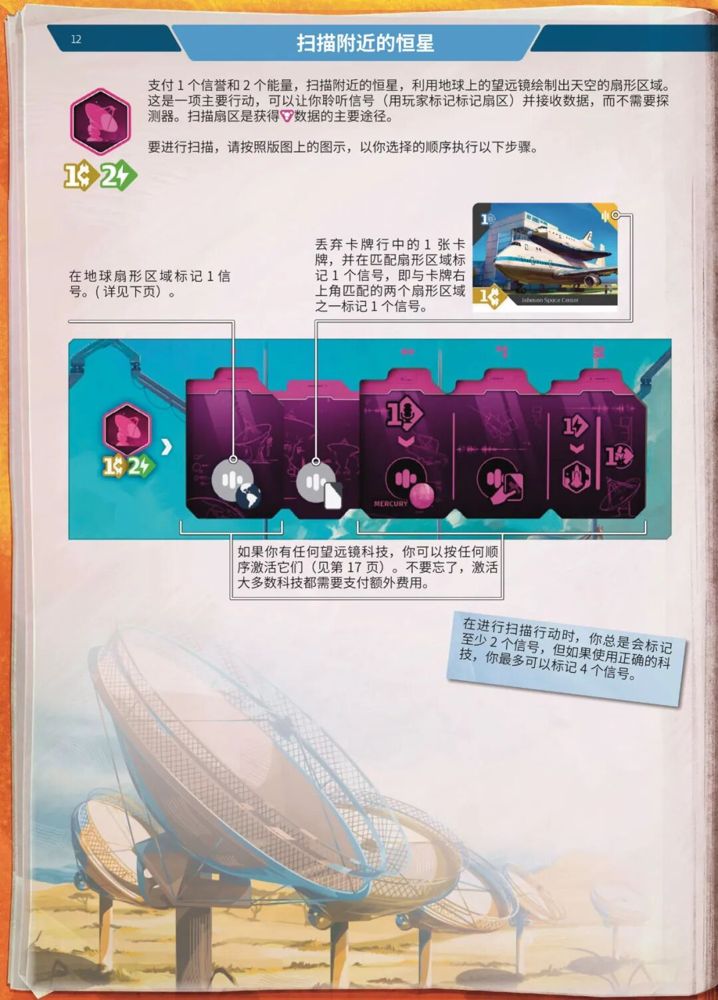
# 规则书第 12 页（扫描图 12)
扫描附近的恒星
支付 1 个信誉和 2 个能量，扫描附近的恒星，利用地球上的望远镜绘制出天空的扇形区域。这是一项主要行动，可以让你聆听信号（用玩家标记标记扇区）并接收数据，而不需要探测器。扫描扇区是获得〔粉色"数据"资源图标,图案呈倒三角状〕数据的主要途径。
要进行扫描，请按照版图上的图示，以你选择的顺序执行以下步骤。
〔左下角:一枚粉色六边形行动图标,内为射电望远镜天线图案;其下并排两枚费用图标:"1⟡"(金色六边形硬币图标)与"2⚡"(绿色闪电图标)〕
版图图示（扫描行动步骤标注）
页面中部为一幅版图照片式示意图：最左侧为上述扫描行动六边形图标，右侧一个白色"⟩"箭头，其后依次排开数块紫红色扇形板块；图中有引线标注如下（按版面从左至右）。
在地球扇形区域标记 1 信号。〔原文如此〕（详见下页）。
丢弃卡牌行中的 1 张卡牌，并在匹配扇形区域标记 1 个信号，即与卡牌右上角匹配的两个扇形区域之一标记 1 个信号。
示意图下方说明框内文字：
如果你有任何望远镜科技，你可以按任何顺序激活它们（见第 17 页）。不要忘了，激活大多数科技都需要支付额外费用。
示意图右下方蓝色便签上文字：
在进行扫描行动时，你总是会标记至少 2 个信号，但如果使用正确的科技，你最多可以标记 4 个信号。
示例卡牌文字
示意图右上角配有一张卡牌示例（由引线连向“丢弃卡牌行”标注），卡面文字逐字转录如下：
- 左上角：1（数字后附一枚小圆形图标，图案过小，〔?〕)
- 右上角橙色斜角内：粉色柱状“信号”图标
- 左下角金色菱形内：1⟡
- 底部名称：Johnson Space Center
〔图: 示例卡牌卡面为一架背驮航天飞机的大型飞机,前方是场馆建筑,建筑上有极小的英文字样,无法辨认。〕
〔图: 版图示意图各板块顶部均有粉红色标签,标签上的白色小字无法辨认;版图上缘立有三面粉色小旗。板块内部图案从左至右依次为:灰色圆内"信号柱"图标并缀地球图案;灰色圆内"信号柱"图标并缀卡牌图案;"1"(旁附麦克风形图标)菱形图标与向下箭头,其下黑色圆内"信号柱"图标,旁为一颗粉色星球,星球处印有英文"MERCURY";黑色圆内"信号柱"图标与手托卡牌图标;"1⚡"菱形图标与向下箭头,其下六边形内火箭图标;最右侧一枚"1⟡"菱形图标。板块底色上隐约印有望远镜线稿与声波纹样。〕
〔图: 页面下半部为整页插画——沙漠中矗立着多座大型射电望远镜(碟形天线),天际为浅色天空。〕
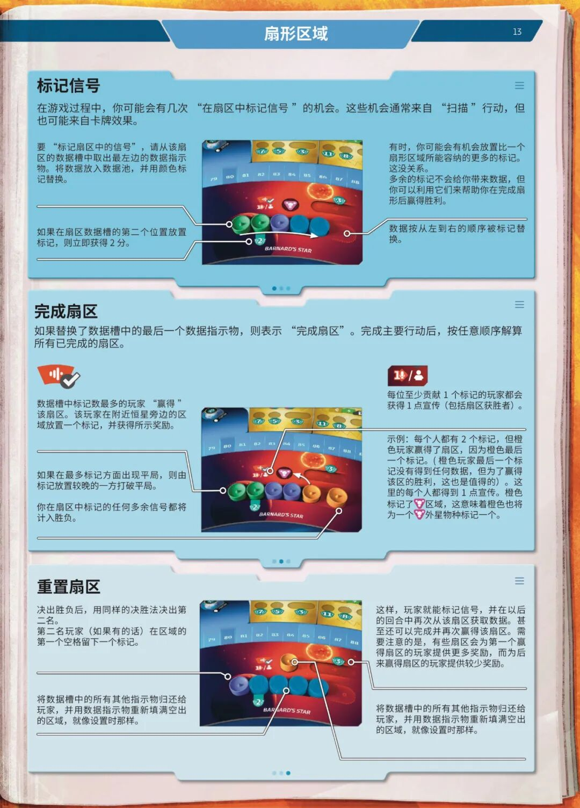
# 规则书第 13 页（扫描图 13)
页眉章名：扇形区域
扇形区域
（页首横幅章名）
标记信号
在游戏过程中，你可能会有几次“在扇区中标记信号”的机会。这些机会通常来自“扫描”行动，但也可能来自卡牌效果。
要“标记扇区中的信号”，请从该扇区的数据槽中取出最左边的数据指示物。将数据放入数据池，并用颜色标记替换。
有时，你可能会有机会放置比一个扇形区域所能容纳的更多的标记。这没关系。
多余的标记不会给你带来数据，但你可以利用它们来帮助你在完成扇形〔原文如此〕后赢得胜利。
如果在扇区数据槽的第二个位置放置标记，则立即获得 2 分。
数据按从左到右的顺序被标记替换。
完成扇区
如果替换了数据槽中的最后一个数据指示物，则表示“完成扇区”。完成主要行动后，按任意顺序解算所有已完成的扇区。
〔图: 图标——红色扇形上有白色信号条,右下叠加黑色圆形对勾徽章〕
数据槽中标记数最多的玩家“赢得”该扇区。该玩家在附近恒星旁边的区域放置一个标记，并获得所示奖励。
如果在最多标记方面出现平局，则由标记放置较晚的一方打破平局。
你在扇区中标记的任何多余信号都将计入胜负。
〔图: 图标——深红色圆角方形,内为"1〔信号小图标〕/〔人形图标〕"〕
每位至少贡献 1 个标记的玩家都会获得 1 点宣传（包括扇区获胜者）。
示例：每个人都有 2 个标记，但橙色玩家赢得了扇区，因为橙色最后一个标记。〔原文如此〕（橙色玩家最后一个标记没有得到任何数据，但为了赢得该区的胜利，这也是值得的）。这里的每个人都得到 1 点宣传。橙色标记了〔外星物种图标〕区域，这意味着橙色也将为一个〔外星物种图标〕外星物种标记一个。
重置扇区
决出胜负后，用同样的决胜法决出第二名。
第二名玩家（如果有的话）在区域的第一个空格留下一个标记。
将数据槽中的所有其他指示物归还给玩家，并用数据指示物重新填满空出的区域，就像设置时那样。
这样，玩家就能标记信号，并在以后的回合中再次从该扇区获得数据。甚至还可以完成并再次赢得该扇区。需要注意的是，有些扇区会为第一个赢得扇区的玩家提供更多奖励，而为后来赢得扇区的玩家提供较少奖励。
将数据槽中的所有其他指示物归还给玩家，并用数据指示物重新填满空出的区域，就像设置时那样。
（注：上段与“重置扇区”版块左下角的标注文字完全相同，原书两处均印有此段，分别以引线指向照片不同位置。）
〔图: 版块"标记信号"配图——游戏版图照片,巴纳德之星(BARNARD'S STAR)扇区;数据槽内从左到右为绿、绿、紫、蓝、蓝五个颜色标记圆片,一条白色箭头从左向右指向槽内,左起第一枚绿色圆片下压有"2"分标记;照片上方为黄色奖励牌一排,可见盾形分值 7、5、3(左组)与 11、8(右组);蓝色数据轨上印有数字 79、80、81、82、83、84、85、86、87、88;扇区右侧太阳旁有一枚"3"盾形标记〕
〔图: 版块"完成扇区"配图——同一扇区版图照片;数据槽内从左到右为绿、绿、紫、紫、橙、橙六个颜色圆片,左起第一枚绿色圆片下压有"2"分标记,白色箭头从右指向扇区中央的粉紫色外星物种图标〕
〔图: 版块"重置扇区"配图——同一扇区版图照片;数据槽内从左到右为紫、蓝、蓝、蓝、蓝五个颜色圆片,左起第二枚蓝色圆片下压有"2"分标记,一个橙色圆片被放在上方恒星旁奖励区的第一个空格〕
图内印刷文字（版图照片上的文字，逐字转录）
- BARNARD'S STAR
- 数据轨数字：79 80 81 82 83 84 85 86 87 88
- 奖励牌盾形分值：7、5、3（左组）；11、8（右组）
- 扇区右侧盾形分值：3
- 数据槽下分值标记：2
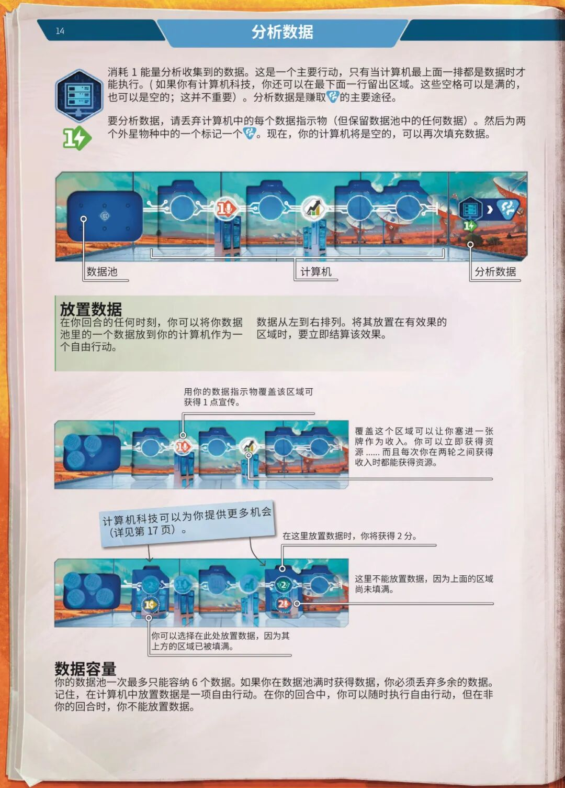
# 规则书第 14 页（扫描图 14)
分析数据
消耗 1 能量分析收集到的数据。这是一个主要行动，只有当计算机最上面一排都是数据时才能执行。（如果你有计算机科技，你还可以在最下面一行留出区域。这些空格可以是满的，也可以是空的；这并不重要）。〔原文如此〕分析数据是赚取〔蓝色图标〕的主要途径。
段旁图标：左侧为蓝色六边形图标，内绘服务器机架；其下为绿色菱形图标，内为白色「1」与闪电符号。
要分析数据，请丢弃计算机中的每个数据指示物（但保留数据池中的任何数据）。然后为两个外星物种中的一个标记一个〔蓝色图标〕。现在，你的计算机将是空的，可以再次填充数据。
〔图:横幅插图(数据池—计算机—分析数据)。计算机面板照片式插图:左端圆角方块为数据池;中部一排插槽,其中一枚红色代板印「1」与白色麦克风状符号,另一处为白色圆形图标内绘上升箭头与彩色柱状图;右端为蓝色六边形服务器图标,经白色箭头指向蓝色倒三角图标(内为白色信号状符号),服务器图标下方有绿色「1⚡」。插图下方三个引线标注,自左至右:数据池、计算机、分析数据。〕
放置数据
（本节为浅绿底色双栏文本块，逐栏照录。）
左栏：在你回合的任何时刻，你可以将你数据池里的一个数据放到你的计算机作为一个自由行动。
右栏：数据从左到右排列。将其放置在有效果的区域时，要立即结算该效果。
图上标注（引线指向下方插图相应位置）：
- 用你的数据指示物覆盖该区域可获得 1 点宣传。
- 覆盖这个区域可以让你塞进一张牌〔原文如此〕作为收入。你可以立即获得资源……而且每次你在两轮之间获得收入时都能获得资源。
〔图:横幅插图(覆盖示例)。左端数据池内放有 3 个深蓝色数据指示物;面板插槽上可见红色代板印「1」与白色麦克风状符号,以及白色圆形图标内绘上升箭头与彩色柱状图;两条引线标注文字见上文。〕
图上标注（引线指向下方插图相应位置）：
- 计算机科技可以为你提供更多机会（详见第 17 页）。
- 在这里放置数据时，你将获得 2 分。
- 这里不能放置数据，因为上面的区域尚未填满。
- 你可以选择在此处放置数据，因为其上方的区域已被填满。
〔图:横幅插图(放置数据示例)。左端数据池内放有 4 个深蓝色数据指示物;面板多处插槽已放置深蓝色数据指示物,其中可见金黄色六边形代板印「1」及符号(虚线描边)、绿色「2」图标(带白色符号)、红色圆形代板印「2」与闪电符号;四条引线标注文字见上文。〕
数据容量
你的数据池一次最多只能容纳 6 个数据。如果你在数据池满时获得数据，你必须丢弃多余的数据。记住，在计算机中放置数据是一项自由行动。在你的回合中，你可以随时执行自由行动，但在非你的回合时，你不能放置数据。
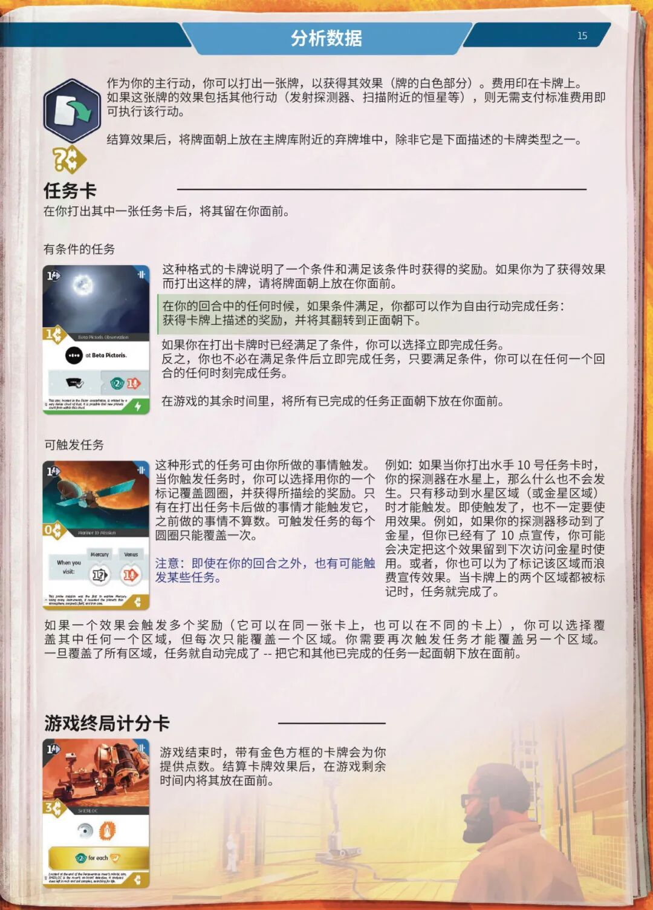
# 规则书第 15 页（扫描图 15)
分析数据
作为你的主行动，你可以打出一张牌，以获得其效果（牌的白色部分）。费用印在卡牌上。如果这张牌的效果包括其他行动（发射探测器、扫描附近的恒星等），则无需支付标准费用即可执行该行动。
结算效果后，将牌面朝上放在主牌库附近的弃牌堆中，除非它是下面描述的卡牌类型之一。
任务卡
在你打出其中一张任务卡后，将其留在你面前。
有条件的任务
这种格式的卡牌说明了一个条件和满足该条件时获得的奖励。如果你为了获得效果而打出这样的牌，请将牌面朝上放在你面前。
在你的回合中的任何时候，如果条件满足，你都可以作为自由行动完成任务：获得卡牌上描述的奖励，并将其翻转到正面朝下。
〔原文此两行印在浅绿色底框内〕
如果你在打出卡牌时已经满足了条件，你可以选择立即完成任务。
反之，你也不必在满足条件后立即完成任务，只要满足条件，你可以在任何一个回合的任何时刻完成任务。
在游戏的其余时间里，将所有已完成的任务正面朝下放在你面前。
可触发任务
（以下两栏并排排版）
左栏：
这种形式的任务可由你所做的事情触发。当你触发任务时，你可以选择用你的一个标记覆盖圆圈，并获得所描绘的奖励。只有在打出任务卡后做的事情才能触发它，之前做的事情不算数。可触发任务的每个圆圈只能覆盖一次。
注意：即使在你的回合之外，也有可能触发某些任务。〔原文此段为彩色字体〕
右栏（示例说明）：
例如：如果当你打出水手 10 号任务卡时，你的探测器在水星上，那么什么也不会发生。只有移动到水星区域（或金星区域）时才能触发。即使触发了，也不一定要使用效果。例如，如果你的探测器移动到了金星，但你已经有了 10 点宣传，你可能会决定把这个效果留到下次访问金星时使用。或者，你也可以为了标记该区域而浪费宣传效果。当卡牌上的两个区域都被标记时，任务就完成了。
如果一个效果会触发多个奖励（它可以在同一张卡上，也可以在不同的卡上），你可以选择覆盖其中任何一个区域，但每次只能覆盖一个区域。你需要再次触发任务才能覆盖另一个区域。一旦覆盖了所有区域，任务就自动完成了 -- 〔原文如此：破折号印作两个连字符"--"〕把它和其他已完成的任务一起面朝下放在面前。
游戏终局计分卡
游戏结束时，带有金色方框的卡牌会为你提供点数。结算卡牌效果后，在游戏剩余时间内将其放在面前。
示例卡牌文字
示例卡 1（配于“有条件的任务”小节）
- 左上角费用：1（带小图标）
- 卡名：Beta Pictoris Observation
- 金色六边形费用框：1（带图标）
- 条件行：〔黑色圆形图标,内为三个小图形,无法辨认〕at Beta Pictoris.
- 奖励行：〔一叠卡牌加对勾的图标〕;绿色六边形，内为数字 2;红色六边形，内为数字 1
- 底部小字（英文 flavor 印刷体，极小，辨认困难，标点无法完全确认）：This star, located in the Pictor constellation, is enveloped by a very dense cloud of dust. It is possible that new planets could form within this cloud.〔部分单词为依稀辨认〕
- 右下角：绿色角标上的白色闪电图标
示例卡 2（配于“可触发任务”小节）
- 左上角费用：1
- 卡名：Mariner 10 Mission
- 金色六边形费用框：0（带图标）
- 效果区（三栏排布）：
| When you visit: | Mercury | Venus |
|---|---|---|
| （栏首单元格） | 黑色六边形：数字 1 加一个小图标〔图标图形无法辨认,形似问号〕 | 红色六边形：数字 1 加一个小图标〔图标图形无法辨认〕 |
- 底部小字（英文 flavor 印刷体，极小，依稀辨认）：This probe mission was the first to explore Mercury. Using many instruments, it revealed the planet's thin atmosphere, magnetic field, and iron core.〔第二行行首有一小图标(与第16页示例卡同位),末行词句为依稀辨认〕
- 底部金色区域右下：金色图标（卡牌类型标志）
示例卡 3（配于“游戏终局计分卡”小节）
- 左上角费用：1
- 卡名：SHERLOC
- 金色六边形费用框：3（带图标）
- 中部两个图标：〔灰色碟状图标,图形无法辨认〕;〔橙色锯齿圆形,内为火箭状图形〕
- 金色横幅：绿色六边形，内为数字 2;随后为文字 for each;随后一枚橙色图标〔图形无法辨认〕
- 底部小字（英文 flavor 印刷体，极小，辨认困难）：Located at the end of the Perseverance rover's robotic arm, SHERLOC is the rover's on-board detective. It analyses clues left in rock and soil samples, searching for life.〔部分单词为依稀辨认〕
- 右下角：金色图标（卡牌类型标志）
页面视觉元素
〔图:正文首段左侧为深色六边形徽标,内绘白色卡牌与绿色弧形箭头(示意"打出一张牌");徽标下方并列一个金色菱形图标与一个金色问号"?"。〕
〔图:页面右下角背景有极淡的插画:一位戴眼镜的光头男子侧影望向明亮的荒漠/建筑景象,页面下部另隐约有柱状物结构,均不承载规则文字。〕
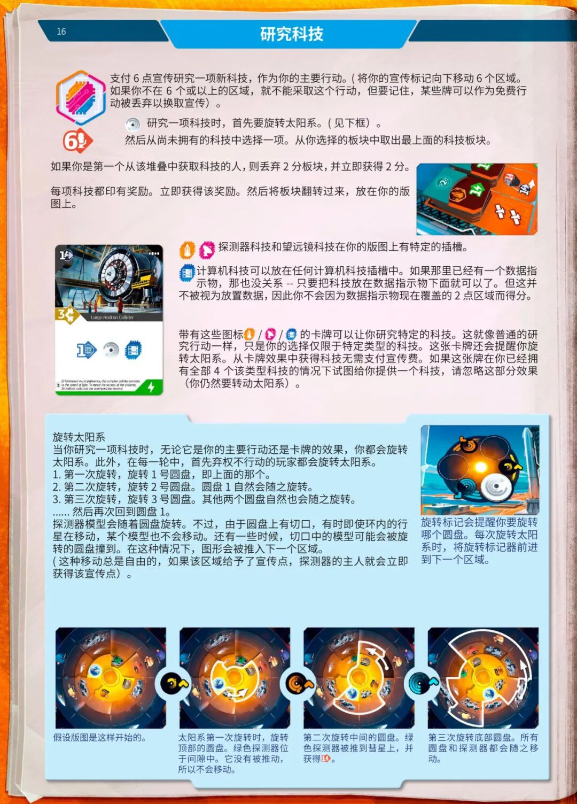
# 规则书第 16 页（扫描图 16)
研究科技
〔六边形研究行动图标〕支付 6 点宣传研究一项新科技，作为你的主要行动。（将你的宣传标记向下移动 6 个区域。如果你不在 6 个或以上的区域，就不能采取这个行动，但要记住，某些牌可以作为免费行动被丢弃以换取宣传）。
〔橙色五边形图标:白色"6"+麦克风〕
- 〔灰色同心圆螺旋图标〕研究一项科技时，首先要旋转太阳系。（见下框）。〔原文如此〕
然后从尚未拥有的科技中选择一项。从你选择的板块中取出最上面的科技板块。
如果你是第一个从该堆叠中获取科技的人，则丢弃 2 分板块，并立即获得 2 分。
每项科技都印有奖励。立即获得该奖励。然后将板块翻转过来，放在你的版图上。
〔探测器图标〕〔望远镜图标〕探测器科技和望远镜科技在你的版图上有特定的插槽。
〔计算机图标〕计算机科技可以放在任何计算机科技插槽中。如果那里已经有一个数据指示物，那也没关系 -- 只要把科技放在数据指示物下面就可以了。但这并不被视为放置数据〔原文如此〕，因此你不会因为数据指示物现在覆盖的 2 点区域而得分。
带有这些图标〔探测器图标〕/〔望远镜图标〕/〔计算机图标〕的卡牌可以让你研究特定的科技。这就像普通的研究行动一样，只是你的选择仅限于特定类型的科技。这张卡牌还会提醒你旋转太阳系。从卡牌效果中获得科技无需支付宣传费。如果这张牌在你已经拥有全部 4 个该类型科技的情况下试图给你提供一个科技，请忽略这部分效果（你仍然要转动太阳系）。
旋转太阳系（蓝底说明框）
当你研究一项科技时，无论它是你的主要行动还是卡牌的效果，你都会旋转太阳系。此外，在每一轮中，首先弃权不行动的玩家都会旋转太阳系。
- 第一次旋转，旋转 1 号圆盘，即上面的那个。
- 第二次旋转，旋转 2 号圆盘。圆盘 1 自然会随之旋转。
- 第三次旋转，旋转 3 号圆盘。其他两个圆盘自然也会随之旋转。
...... 然后再次回到圆盘 1。
探测器模型会随着圆盘旋转。不过，由于圆盘上有切口，有时即使环内的行星在移动，某个模型也不会移动。还有一些时候，切口中的模型可能会被旋转的圆盘撞到。在这种情况下，图形〔原文如此〕会被推入下一个区域。（这种移动总是自由的，如果该区域给予了宣传点，探测器的主人就会立即获得该宣传点）。
〔框内右图旁文字〕旋转标记会提醒你要旋转哪个圆盘。每次旋转太阳系时，将旋转标记器前进到下一个区域。
底部四联示例图说明
- 假设版图是这样开始的。
- 太阳系第一次旋转时，旋转顶部的圆盘。绿色探测器位于间隙中。它没有被推动，所以不会移动。
- 第二次旋转中间的圆盘。绿色探测器被推到彗星上，并获得 1〔红色五边形小图标,内有白色图形〕。
- 第三次旋转底部圆盘。所有圆盘和探测器都会随之移动。
示例卡牌文字（页中左侧卡牌）
- 卡名：Large Hadron Collider
- 左上角：1（旁有一深紫色小图标，〔无法辨认〕)
- 右上角：••••
- 左下费用徽章：3〔计算机图标〕
- 效果图标行：蓝色箭头形徽标，印"1"，旁有数行极小英文字样〔无法辨认〕;〔太阳系/旋转图标〕;〔计算机图标〕
- 底部风味文字（三行英文小字）：27 kilometers in circumference, this complex collides particles at the speed of light. To unravel the secrets of the universe, 70〔?〕 million collisions are attempted per second.〔极小印刷体,依稀辨认;末行首数字为依稀辨认〕
- 底部绿色横条内有白色闪电图标；风味文字左侧另有一小图标，〔无法辨认〕
图注（纯视觉元素）
〔图: 页首中央蓝色横幅标题"研究科技",左侧深蓝页签印页码"16"〕
〔图: 页左上六边形徽标,橙/粉/蓝三色斜向电路板条纹;其下方为橙色五边形图标,内印白色"6"与白色麦克风图形〕
〔图: 右上照片,橙色玩家版图上叠放着深红色科技板块堆,板块顶面印有绿色奖励图标,旁立两个白色卫星/天线模型〕
〔图: 左中示例卡牌,配图为大型环形对撞机装置的厂房内景,几名穿红色工作服的人员站在环形装置前〕
〔图: 蓝框右侧照片,太阳系版图特写,中央为发光太阳,橙色、白色、青色三个旋转标记位于轨道上〕
〔图: 页底四联照片,俯视太阳系版图(黄/橙色调),依次以白色轮廓线高亮顶部、中间、底部圆盘并绘旋转箭头;相邻两图之间各有一个黑底圆形旋转标记图标,图案与弯箭头分别为黄色、橙色、青色〕
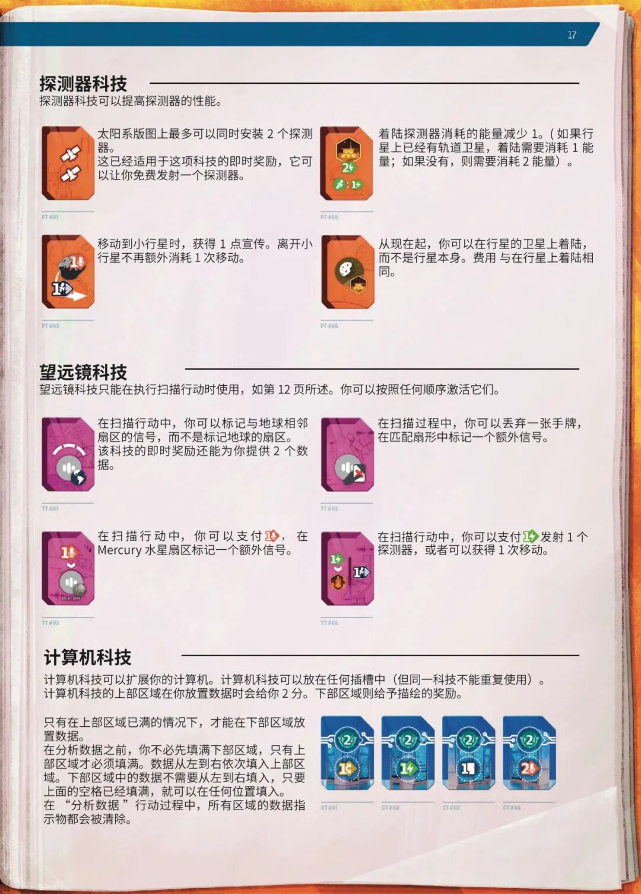
# 规则书第 17 页（扫描图 17)
探测器科技
探测器科技可以提高探测器的性能。
PT #01
太阳系版图上最多可以同时安装 2 个探测器。这已经适用于〔原文如此〕这项科技的即时奖励，它可以让你免费发射一个探测器。
PT #02
着陆探测器消耗的能量减少 1。（如果行星上已经有轨道卫星，着陆需要消耗 1 能量；如果没有，则需要消耗 2 能量）。
PT #03
移动到小行星时，获得 1 点宣传。离开小行星不再额外消耗 1 次移动。
PT #04
从现在起，你可以在行星的卫星上着陆，而不是行星本身。费用 与在行星上着陆相同。
望远镜科技
望远镜科技只能在执行扫描行动时使用，如第 12 页所述。你可以按照任何顺序激活它们。
TT #01
在扫描行动中，你可以标记与地球相邻扇区的信号，而不是标记地球的扇区。该科技的即时奖励还能为你提供 2 个数据。
TT #02
在扫描过程中，你可以丢弃一张手牌，在匹配扇形中标记一个额外信号。
TT #03
在扫描行动中，你可以支付 1〔橙色"1"+信号(麦克风)图标〕， 在 Mercury 水星扇区标记一个额外信号。
TT #04
在扫描行动中，你可以支付 1〔绿色"1"+闪电能量图标〕发射 1 个探测器，或者可以获得 1 次移动。
计算机科技
计算机科技可以扩展你的计算机。计算机科技可以放在任何插槽中（但同一科技不能重复使用）。计算机科技的上部区域在你放置数据时会给你 2 分。下部区域则给予描绘的奖励。
只有在上部区域已满的情况下，才能在下部区域放置数据。
在分析数据之前，你不必先填满下部区域，只有上部区域才必须填满。数据从左到右依次填入上部区域。下部区域中的数据不需要从左到右填入，只要上面的空格已经填满，就可以在任何位置填入。
在“分析数据”行动过程中，所有区域的数据指示物都会被清除。
页面视觉元素
〔图: 页面分三栏区块排版,每条规则文字旁配一张橙色/紫红色/蓝色的科技卡牌图,卡牌图下方印有灰色小字编号(PT #01–PT #04、TT #01–TT #04、CT #01–CT #04)。计算机科技一节右侧并排 4 张蓝色计算机卡。〕
示例卡牌文字
- PT #01 卡面： 两个探测器图形图标，无文字。
- PT #02 卡面： 六边形着陆舱图形；“2“+闪电（绿色）；”1“+闪电 : ”1”+闪电（绿色小字一行）。
- PT #03 卡面： 小行星图形；“1“+红色宣传（麦克风）图标；”1”+移动（箭头）图标及白色箭头。
- PT #04 卡面： 月球（卫星）图形与六边形着陆舱图形，无文字。
- TT #01 卡面： 扫描转盘图形与地球图形，无文字。
- TT #02 卡面： 扫描转盘图形与一张带红色叉的弃牌图形，无文字。
- TT #03 卡面： “1“+橙色信号（麦克风）图标；向下箭头；扫描转盘与水星图形；卡面下方印有”MERCURY”。
- TT #04 卡面： “1“+闪电（绿色）图标；向下箭头；橙色六边形探测器图形；”1”+移动（箭头）图标。
- CT #01–CT #04 卡面： 上部均为带月桂环绕的“2“圆形徽章；下部虚线圆内依次为 ”10“（黄色箭头底）、”1“+闪电（绿色箭头底）、”1“+探测器图形（白色/深色箭头底）、”2”+橙色信号（麦克风）图标（红色箭头底）。
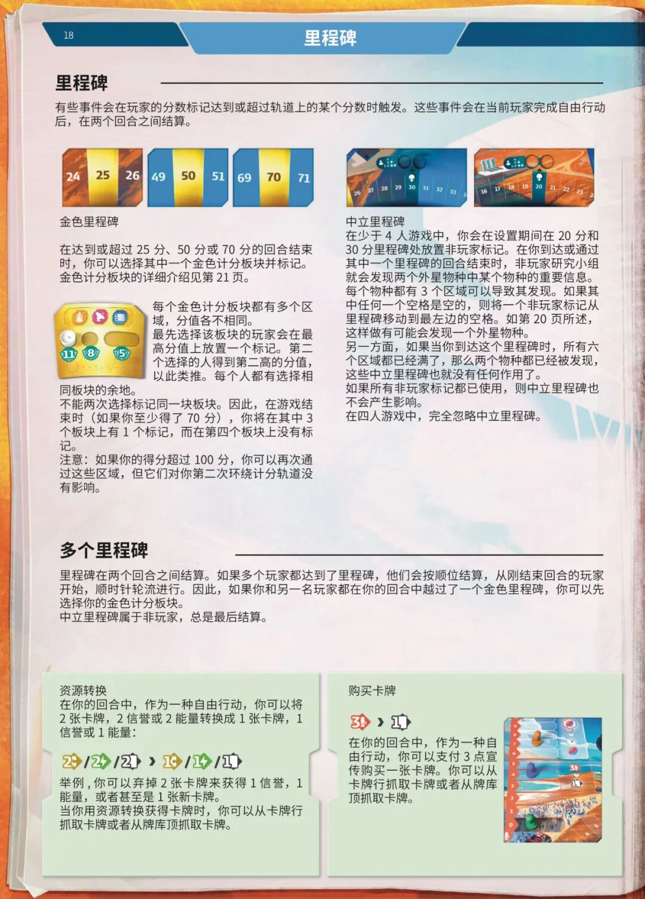
# 规则书第 18 页（扫描图 18)
里程碑
有些事件会在玩家的分数标记达到或超过轨道上的某个分数时触发。这些事件会在当前玩家完成自由行动后，在两个回合之间结算。
〔图:三块金色计分板块照片,板块上的数字从左到右依次为"24 25 26""49 50 51""69 70 71",其中 25、50、70 位于黄色高亮条内〕
金色里程碑
在达到或超过 25 分、50 分或 70 分的回合结束时，你可以选择其中一个金色计分板块并标记。金色计分板块的详细介绍见第 21 页。
〔图:一块金色计分板块实物照片,板块上方有三个彩色图标(橙色火箭、紫红色飞船、蓝色清单),下方有三个绿色盾形分值标记,数字分别为 11、8、5,板块左上放置一个白色标记〕
每个金色计分板块都有多个区域，分值各不相同。最先选择该板块的玩家会在最高分值上放置一个标记。第二个选择的人得到第二高的分值，以此类推。每个人都有选择相同板块的余地。
不能两次选择标记同一块板块。因此，在游戏结束时（如果你至少得了 70 分），你将在其中 3 个板块上有 1 个标记，而在第四个板块上没有标记。
注意：如果你的得分超过 100 分，你可以再次通过这些区域，但它们对你第二次环绕计分轨道没有影响。
〔图:两张计分轨道局部特写照片,显示轨道数字与非玩家标记放置的情形〕
中立里程碑
在少于 4 人游戏中，你会在设置期间在 20 分和 30 分里程碑处放置非玩家标记。在你到达或通过其中一个里程碑的回合结束时，非玩家研究小组就会发现两个外星物种中某个物种的重要信息。每个物种都有 3 个区域可以导致其发现。如果其中任何一个空格是空的，则将一个非玩家标记从里程碑移动到最左边的空格。如第 20 页所述，这样做有可能会发现一个外星物种。
另一方面，如果当你到达这个里程碑时，所有六个区域都已经满了，那么两个物种都已经被发现，这些中立里程碑也就没有任何作用了。
如果所有非玩家标记都已使用，则中立里程碑也不会产生影响。
在四人游戏中，完全忽略中立里程碑。
多个里程碑
里程碑在两个回合之间结算。如果多个玩家都达到了里程碑，他们会按顺位结算，从刚结束回合的玩家开始，顺时针轮流进行。因此，如果你和另一名玩家都在你的回合中越过了一块金色里程碑，你可以先选择你的金色计分板块。
中立里程碑属于非玩家，总是最后结算。
资源转换
在你的回合中，作为一种自由行动，你可以将 2 张卡牌，2 信誉或 2 能量转换成 1 张卡牌，1 信誉或 1 能量：
〔图:图标算式"2〔信誉图标〕/ 2〔能量图标〕/ 2〔卡牌图标〕 > 1〔信誉图标〕/ 1〔能量图标〕/ 1〔卡牌图标〕"〕
举例，你可以弃掉 2 张卡牌来获得 1 信誉，1 能量，或者甚至是 1 张新卡牌。
当你用资源转换获得卡牌时，你可以从卡牌行抓取卡牌或者从牌库顶抓取卡牌。
购买卡牌
〔图:图标算式"3〔红色麦克风图标〕 > 1〔卡牌图标〕"〕
在你的回合中，作为一种自由行动，你可以支付 3 点宣传〔原文如此〕购买一张卡牌。你可以从卡牌行抓取卡牌或者从牌库顶抓取卡牌。
〔图:一张卡牌实物照片(页面右下角,卡面文字因分辨率所限无法辨认)〕
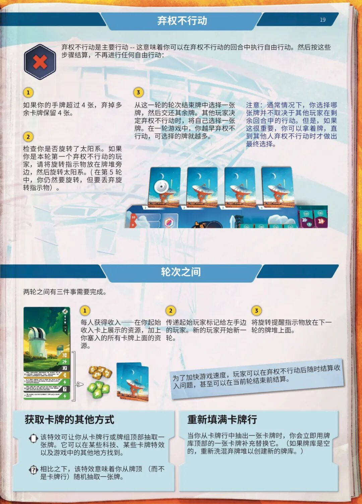
# 规则书第 19 页（扫描图 19)
弃权不行动
〔图标:深色六角形徽章,内为红色"X"(弃权不行动图标)〕 弃权不行动是主要行动 -- 这意味着你可以在弃权不行动的回合中执行自由行动。然后按这些步骤结算，不再进行任何自由行动：
- 如果你的手牌超过 4 张，弃掉多余卡牌保留 4 张。
- 检查你是否旋转了太阳系。如果你是本轮第一个弃权不行动的玩家，请将旋转指示物放在牌堆旁边，然后旋转太阳系。（在第 5 轮中，你仍然要旋转，但要丢弃旋转指示物）。
- 从这一轮的轮次结束牌中选择一张牌，然后交还其余牌。其他玩家决定弃权不行动时，将自己选择一张牌〔原文如此〕。在一轮游戏中，你越早弃权不行动，可选择的牌就越多。
注意：通常情况下，你选择哪张牌并不取决于其他玩家在剩余回合中的行动。但是，如果这很重要，你可以拿着牌，直到其他人弃权不行动时才做出最终选择。
〔图:上方为四张"轮次结束牌"示例,牌面均为荒漠上架设射电望远镜碟形天线的插画,立于一块游戏图板条上;图板条上有编号格与极小图标,无法辨认。〕
轮次之间
两轮之间有三件事需要完成。
〔图:左侧为一张起始收入卡示例,牌面主图是绿色田野上的白色天文圆顶室(卡面文字见文末"示例卡牌文字");箭头指向若干黄色与绿色多面体资源块和一叠卡牌(最上方为碟形天线卡面)。〕
- 每人获得收入——在你起始收入卡上展示的资源，加上你塞入的所有卡牌上面的资源。
- 传递起始玩家标记给左手边的玩家。新的玩家开始新一轮。
- 将旋转提醒指示物放在下一轮的牌堆上面。
为了加快游戏速度，玩家可以在弃权不行动后随时结算收入问题〔原文如此〕，甚至可以在当前轮结束前结算。
获取卡牌的其他方式
- 〔图标:深色圆角方块内一张白卡〕 该特效可让你从卡牌行或牌组顶部抽取一张牌。它可以在某些科技、某些卡牌特效以及游戏中的其他地方找到。
- 〔图标:深色圆角方块内一张带"?"的卡〕 相比之下，该特效意味着你从牌顶 （而不是卡牌行） 随机抽取一张牌。
重新填满卡牌行
当你从卡牌行中抽出一张卡牌时，你会立即用牌库顶部的一张卡牌补充替换它。 （如果牌库是空的，重新洗混弃牌堆以创建新的牌库。）
示例卡牌文字（轮次之间·起始收入卡）
- 牌面右上角一枚圆形徽章（内有小幅彩色图案），其下为一条深色竖幅，内有数行极小白色文字与图标：〔无法辨认〕。
- 右侧自上而下三条彩色横带：棕色带“3“+〔资源图标〕;绿色带”2“+〔闪电图标〕;黑色带”1”+"?"〔问号图标〕。
- 下部四行白底说明条，每行左端有一个小图标或编号〔无法辨认〕，右端图标依次为：〔齿轮形图标〕、〔闪电图标〕、〔"?"图标〕、〔闪电图标〕;四行英文小字即使放大仍无法辨认：〔无法辨认〕。
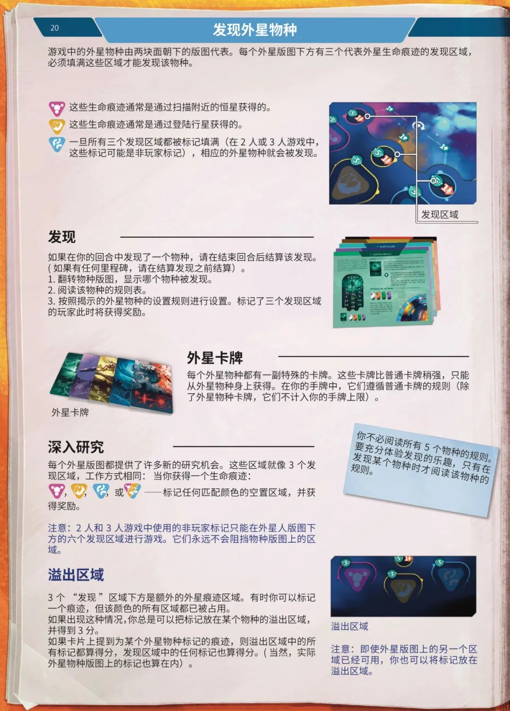
# 规则书第 20 页（扫描图 20)
发现外星物种
游戏中的外星物种由两块面朝下的版图代表。每个外星版图下方有三个代表外星生命痕迹的发现区域，必须填满这些区域才能发现该物种。
- 〔粉图标〕这些生命痕迹通常是通过扫描附近的恒星获得的。
- 〔黄图标〕这些生命痕迹通常是通过登陆行星获得的。
- 〔蓝图标〕一旦所有三个发现区域都被标记填满（在 2 人或 3 人游戏中，这些标记可能是非玩家标记），相应的外星物种就会被发现。
〔图:游戏版图局部照片,深蓝底,可见若干放置了生命痕迹标记的星区,白色引线指向版图下方的区域,引线旁标注"发现区域"〕
发现
如果在你的回合中发现了一个物种，请在结束回合后结算该发现。（如果有任何里程碑，请在结算发现之前结算）。
- 翻转物种版图，显示哪个物种被发现。
- 阅读该物种的规则表。
- 按照揭示的外星物种的设置规则进行设置。标记了三个发现区域的玩家此时将获得奖励。
〔图:面朝下的物种版图叠放照片,顶部露出彩色边缘,最上面一块版面为绿色,印有版图示意图、设置说明文字与图标〕
外星卡牌
每个外星物种都有一副特殊的卡牌。这些卡牌比普通卡牌稍强，只能从外星物种身上获得。在你的手牌中，它们遵循普通卡牌的规则（除了外星物种卡牌，它们不计入你的手牌上限）。
〔图:五张外星卡牌呈扇形排列的照片,卡面分别为绿、紫、黄、蓝、红色调的插画,照片下方标注"外星卡牌"〕
深入研究
每个外星版图都提供了许多新的研究机会。这些区域就像 3 个发现区域，工作方式相同：当你获得一个生命痕迹：
〔粉图标〕，〔黄图标〕，〔蓝图标〕，或〔粉黄双色图标〕——标记任何匹配颜色的空置区域，并获得奖励。
注意：2 人和 3 人游戏中使用的非玩家标记只能在外星人版图〔原文如此〕下方的六个发现区域进行游戏〔原文如此〕。它们永远不会阻挡物种版图上的区域。
〔图:蓝色便签样式提示框,内印文字:"你不必阅读所有 5 个物种的规则。要充分体验发现的乐趣,只有在发现某个物种时才阅读该物种的规则。"〕
溢出区域
3 个“发现”区域下方是额外的外星痕迹区域。有时你可以标记一个痕迹，但该颜色的所有区域都已被占用〔原文如此〕。
如果出现这种情况〔原文如此:此处逗号为半角〕，你总是可以把标记放在某个物种的溢出区域，并得到 3 分。
如果卡片上提到为某个外星物种标记的痕迹，则溢出区域中的所有标记都算得分，发现区域中的任何标记也算得分。（当然，实际外星物种版图上的标记也算在内）。
〔图:版图局部照片,深蓝底上并排三个深色溢出区域轮廓,分别以粉、黄、蓝描边,各标有数字"3",照片下方标注"溢出区域"〕
注意：即使外星版图上的另一个区域已经可用，你也可以将标记放在溢出区域。
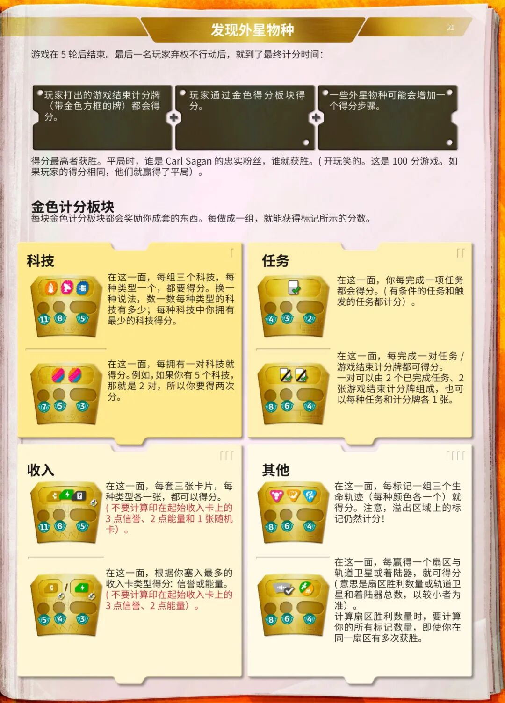
# 规则书第 21 页（扫描图 21)
发现外星物种
游戏在 5 轮后结束。最后一名玩家弃权不行动后，就到了最终计分时间：
- 玩家打出的游戏结束计分牌（带金色方框的牌）都会得分。
- 玩家通过金色得分板块得分。
- 一些外星物种可能会增加一个得分步骤。
得分最高者获胜。平局时，谁是 Carl Sagan 的忠实粉丝，谁就获胜。（开玩笑的。这是 100 分游戏。如果玩家的得分相同，他们就赢得了平局）。
金色计分板块
每块金色计分板块都会奖励你成套的东西。每做成一组，就能获得标记所示的分数。
科技
在这一面，每组三个科技，每种类型一个，都要得分。换一种说法，数一数每种类型的科技有多少；每种科技中你拥有最少的科技得分。〔原文如此〕
在这一面，每拥有一对科技就得分。例如，如果你有 5 个科技，那就是 2 对，所以你要得两次分。
任务
在这一面，你每完成一项任务都会得分。（有条件的任务和触发的任务都计分）。
在这一面，每完成一对任务/游戏结束计分牌都可得分。一对可以由 2 个已完成任务、2 张游戏结束计分牌组成，也可以每种任务和计分牌各 1 张。
收入
在这一面，每套三张卡片，每种类型各一张，都可以得分。（不要计算印在起始收入卡上的 3 点信誉、2 点能量和 1 张随机卡）。
在这一面，根据你塞入最多的收入卡类型得分：信誉或能量。（不要计算印在起始收入卡上的 3 点信誉、2 点能量）。
其他
在这一面，每标记一组三个生命轨迹（每种颜色各一个）就得分。注意，溢出区域上的标记仍然计分！
在这一面，每赢得一个扇区与轨道卫星或者陆器，就可得分（意思是扇区胜利数量或轨道卫星和着陆器总数，以较小者为准）。
计算扇区胜利数量时，要计算你的所有标记数量，即使你在同一扇区有多次获胜。
图
〔图:页面顶部金色页眉横幅,居中为标题"发现外星物种",右侧金色小块印页码"21"。〕
〔图:引言段下方三个深色圆角矩形框,从左至右由两个" + "号相连,表示三项得分来源相加。〕
〔图:页面下半部为 2×2 排列的四张金色计分板块说明卡(边缘带指状缺口),右上角分别有 1、2、3、4 道短竖线刻痕(罗马数字 I–IV);每张卡上下两行,各含一幅计分板块示意小图与一段说明文字。〕
〔图:板块 I「科技」上行小图:三个彩色科技图标(橙、品红、蓝),下方三个绿色分值徽章,数字依次为 11、8、5。〕
〔图:板块 I「科技」下行小图:两个橙、粉、蓝三色斜纹椭圆标记,下方三个绿色分值徽章,数字依次为 7、5、3。〕
〔图:板块 II「任务」上行小图:一张带绿色对勾的任务卡,下方三个绿色分值徽章,数字依次为 4、3、2。〕
〔图:板块 II「任务」下行小图:两张带斜杠与绿色对勾的游戏结束计分牌,下方三个绿色分值徽章,数字依次为 8、6、4。〕
〔图:板块 III「收入」上行小图:三张收入卡图标(信誉、绿色闪电能量、问号随机卡),下方三个绿色分值徽章,数字依次为 11、8、5。〕
〔图:板块 III「收入」下行小图:信誉与能量(绿色闪电)两栏图标,下方三个绿色分值徽章,数字依次为 5、4、3。〕
〔图:板块 IV「其他」上行小图:三个不同颜色的生命轨迹标记(品红、橙、蓝),下方三个绿色分值徽章,数字依次为 8、6、4。〕
〔图:板块 IV「其他」下行小图:带对勾的扇区图标与一枚绿橙双色圆形轨道标记,下方三个绿色分值徽章,数字依次为 8、6、4。〕
〔注:两处「收入」条目中括号内的说明文字"(不要计算印在起始收入卡上的……)"在原书以红色印刷。〕
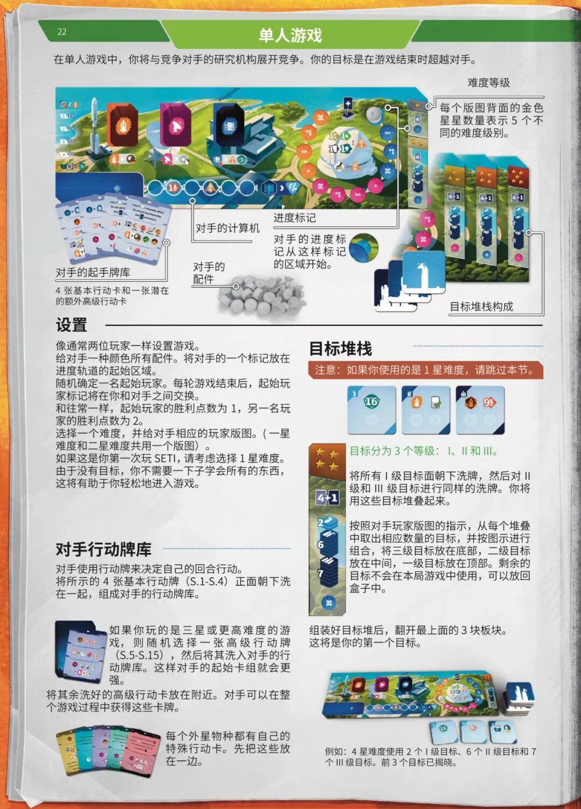
# 规则书第 22 页（扫描图 22）
单人游戏
在单人游戏中，你将与竞争对手的研究机构展开竞争。你的目标是在游戏结束时超越对手。
顶部通栏大图图注（按页面阅读顺序）
难度等级
每个版图背面的金色星星数量表示 5 个不同的难度级别。
对手的计算机
进度标记
对手的进度标记从这样标记〔图：此处内嵌一枚圆形图标，上半绿色、下半蓝色〕的区域开始。
对手的配件
对手的起手牌库
4 张基本行动卡和一张潜在的额外高级行动卡
目标堆栈构成
设置
像通常两位玩家一样设置游戏。
给对手一种颜色所有配件。〔原文如此〕将对手的一个标记放在进度轨道的起始区域。
随机确定一名起始玩家。每轮游戏结束后，起始玩家标记将在你和对手之间交换。
和往常一样，起始玩家的胜利点数为 1，另一名玩家的胜利点数为 2。
选择一个难度，并给对手相应的玩家版图。（一星难度和二星难度共用一个版图）。
如果这是你第一次玩 SETI，请考虑选择 1 星难度。
由于没有目标，你不需要一下子学会所有的东西，这将有助于你轻松地进入游戏。
对手行动牌库
对手使用行动牌来决定自己的回合行动。
将所示的 4 张基本行动牌（S.1-S.4）正面朝下洗在一起，组成对手的行动牌库。
〔侧栏，左侧配一张高级行动牌照片〕如果你玩的是三星或更高难度的游戏，则随机选择一张高级行动牌（S.5-S.15），然后将其洗入对手的行动牌库。这样对手的起始卡组就会更强。
将其余洗好的高级行动卡放在附近。对手可以在整个游戏过程中获得这些卡牌。
〔侧栏，左侧配外星物种特殊行动卡照片〕每个外星物种都有自己的特殊行动卡。先把这些放在一边。
目标堆栈
注意：如果你使用的是 1 星难度，请跳过本节。
〔图：注释框下方为三张示例目标板块照片，卡面文字见文末“示例卡牌文字”。〕
目标分为 3 个等级：I、II 和 III。
将所有 I 级目标面朝下洗牌，然后对 II 级和 III 级目标进行同样的洗牌。你将用这些目标堆叠起来。
按照对手玩家版图的指示，从每个堆叠中取出相应数量的目标，并按图示进行组合，将三级目标放在底部，二级目标放在中间，一级目标放在顶部。剩余的目标不会在本局游戏中使用，可以放回盒子中。
组装好目标堆后，翻开最上面的 3 块板块。这将是你的第一个目标。〔原文如此〕
例如：4 星难度使用 2 个 I 级目标、6 个 II 级目标和 7 个 III 级目标。前 3 个目标已揭晓。
示例卡牌文字
“目标堆栈”注释框下方的三张示例目标板块：
- 左板（级别 I）：左上角蓝色三角内罗马数字“I”；中央绿色圆形徽章，内印数字“16”。
- 中板（级别 II）：左上角蓝色三角内罗马数字“II”；中央两枚图案——橙色六边形徽章（内似为火箭/火焰图案〔?〕）与一枚带绿色对勾的白色卡牌图标；无数字。
- 右板（级别 III）：左上角深色三角内罗马数字“III”；中央两枚图案——橙色六边形徽章（具体图案〔?〕）与橙红色盾形徽章，内印数字“9”（数字右侧另有一感叹号状小白标记〔?〕）。
纯视觉元素
〔图：页面顶部通栏为对手版图大幅照片，引线连接各图注；照片左下为对手的起手牌库（两张蓝色行动卡，卡面小字〔无法辨认〕）；中部为对手版图局部（方形电脑板块、进度轨道等）。〕
〔图：“对手的配件”引线指向一堆浅灰色圆片配件的照片。〕
〔图：“目标堆栈构成”引线指向右侧照片：数条不同难度的对手版图侧边条（顶部均印有“4”“+1”方块及标有数字的目标堆叠图示，可见数字 2、4、6、7、8 等），旁为一摞目标板块（顶块深蓝底、印白色建筑剪影）。〕
〔图：“对手行动牌库”第一处侧栏照片：一张紫色高级行动牌，卡面印有多枚橙色、白色图标，文字过小〔无法辨认〕。〕
〔图：页面左下侧栏照片：扇形排列的外星物种特殊行动卡共 5 张（金黄、青、紫、青绿、粉红），卡面文字过小〔无法辨认〕。〕
〔图：“目标堆栈”正文左侧竖条图示：红色标头内 4 颗金星；其下为“4”“+1”两个小方块；再下为三摞六边形目标板块堆，左侧分别标数字 2、6、7，三摞堆顶板块分别标罗马数字 I、II、III；底部一枚蓝色圆形图标（内为白色花纹，具体图案〔?〕）。〕
〔图：页面底部照片：摆好的对手版图，右侧一摞目标板块（顶块深蓝底白色建筑剪影），前方翻开 3 块目标板块——第 1 块绿色徽章数字“16”；第 2 块橙红色月桂徽章，数字似为“15”〔?〕；第 3 块为两枚小徽章图案，无可辨认数字。〕
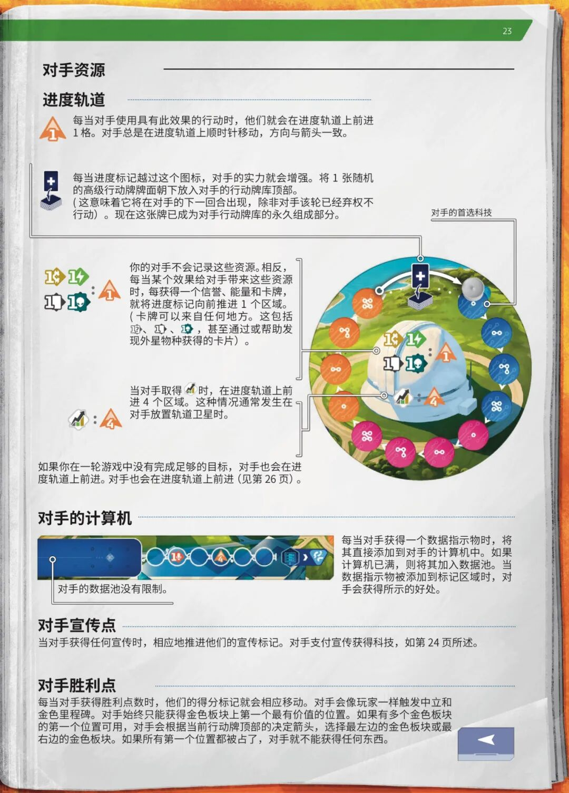
# 规则书第 23 页（扫描图 23)
对手资源
进度轨道
〔图标: 橙色向上箭头,内标"1"〕每当对手使用具有此效果的行动时，他们就会在进度轨道上前进 1 格。对手总是在进度轨道上顺时针移动，方向与箭头一致。
〔图标: 深色卡牌上有白色"+",卡牌下方为一叠牌库及弧形箭头〕每当进度标记越过这个图标，对手的实力就会增强。将 1 张随机的高级行动牌牌面朝下放入对手的行动牌库顶部。（这意味着它将在对手的下一回合出现，除非对手该轮已经弃权不行动）。现在这张牌已成为对手行动牌库的永久组成部分。
〔图标组: 金色"1"+菱形铸币符号、绿色"1"+闪电、黑色"1"+卡牌、深青色"1"+外星人头,四图标后接": "和橙色向上箭头内标"1"〕你的对手不会记录这些资源。相反，每当某个效果给对手带来这些资源时，每获得一个信誉、能量和卡牌〔原文如此〕，就将进度标记向前推进 1 个区域。（卡牌可以来自任何地方。这包括〔图标: 灰色"1"+菱形符号〕、〔图标: 黑色"1"+卡牌〕、〔图标: 深青色"1"+外星人头〕，甚至通过或帮助发现外星物种获得的卡片〔原文如此〕）。
〔图标: 折线上升图表,后接": "和橙色向上箭头内标"4"〕当对手取得〔图标: 同上折线上升图表〕时，在进度轨道上前进 4 个区域。这种情况通常发生在对手放置轨道卫星时。
如果你在一轮游戏中没有完成足够的目标，对手也会在进度轨道上前进。对手也会在进度轨道上前进〔原文如此〕（见第 26 页）。
对手的计算机
〔图: 对手计算机面板长条图——左侧为深蓝色圆角面板(对手的数据池),右侧为 6 个由管线相连的圆形槽位:第 2 槽内为红色方块图标"1"+小图形,第 4 槽内为橙色向上箭头内标"4",其余槽位为空;末端依次为深蓝色六边形(数据库/记录图标)、白色">"箭头、浅蓝色数据池图形(内有三个弯曲符号)。引线自左侧数据池面板引向下方标注文字〕
对手的数据池没有限制。
每当对手获得一个数据指示物时，将其直接添加到对手的计算机中。如果计算机已满，则将其加入数据池。当数据指示物被添加到标记区域时，对手会获得所示的好处。
对手宣传点
当对手获得任何宣传时，相应地推进他们的宣传标记。对手支付宣传获得科技，如第 24 页所述。
对手胜利点
每当对手获得胜利点数时，他们的得分标记就会相应移动。对手会像玩家一样触发中立和金色里程碑。对手始终只能获得金色板块上第一个最有价值的位置。如果有多个金色板块的第一个位置可用，对手会根据当前行动牌顶部的决定箭头，选择最左边的金色板块或最右边的金色板块。如果所有第一个位置都被占了，对手就不能获得任何东西。
页面视觉元素
〔图: 圆形进度轨道俯视示意图(占页面右半大部分)——中央为浅色天文台穹顶,四周环绕一圈圆形科技图标(橙色、蓝色、品红色三组,以白色箭头顺时针相连);轨道上部放置一张带白色"+"的深色卡牌及其下方牌库,一条白色弧形箭头自轨道指向右上方一枚灰色圆盘(轨道卫星),引线标注"对手的首选科技"指向该卫星;穹顶上摆放与左侧文字对应的图标组合:金色"1"+铸币、绿色"1"+闪电、黑色"1"+卡牌、深青色"1"+外星人头与橙色箭头"1",以及图表图标与橙色箭头"4"〕
〔图: 页面右上角绿色页眉条,右端印页码"23";右下角有一枚深蓝色底、白色向左箭头的方形按钮图形(前页箭头)〕
示例卡牌文字
（本页无示例卡牌。）
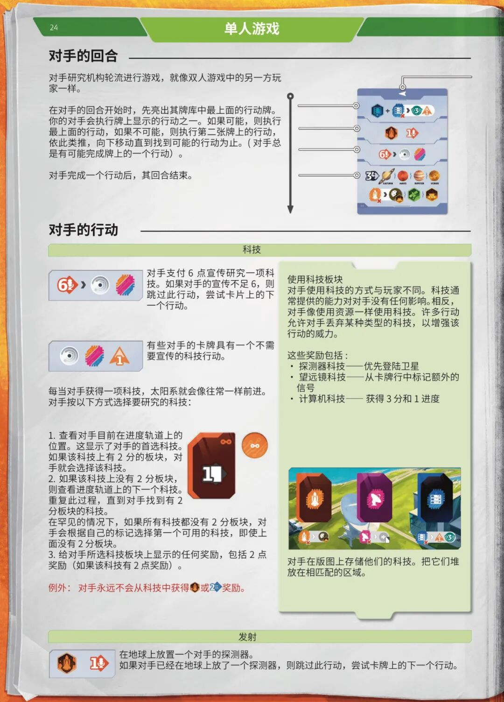
# 规则书第 24 页（扫描图 24)
（页眉章节标题：单人游戏）
对手的回合
对手研究机构轮流进行游戏，就像双人游戏中的另一方玩家一样。
在对手的回合开始时，先亮出其牌库中最上面的行动牌。你的对手会执行牌上显示的行动之一。如果可能，则执行最上面的行动，如果不可能，则执行第二张牌上的行动，依此类推，向下移动直到找到可能的行动为止。（对手总是有可能完成牌上的一个行动）。
对手完成一个行动后，其回合结束。
〔图:页面右侧为对手行动牌示例图。一张蓝紫色行动牌竖放,牌面自上而下印有五行动作图标;数条带圆点的指示线从左侧正文分别指向牌面第 1、2、3、4 行图标。牌面各行图标依次为:1. 深蓝六边形(计算机)图标、加号、带红叉的蓝色芯片图标、右尖括号、青绿色圆内数字"3"、橙色三角内数字"1";2. 棕色六边形火箭(探测器)图标、红色方块内数字"1"加麦克风形小图标;3. 红色方块内数字"6"加麦克风形小图标、右尖括号、灰色同心圆图标、粉蓝斜纹六边形图标;4. 深色图标内数字"3"与箭头,后接四颗行星图案,行星下方分别印英文 SATURN、MARS、JUPITER、VENUS;5. 带红叉的橙色火箭板块图标、右尖括号、棕色圆形(雷达屏)图案、右尖括号、绿色六边形(卫星)图标、右尖括号、棕色六边形(着陆器)图案。〕
对手的行动
科技
〔行动图标行:红色方块内数字"6"加麦克风形小图标、右尖括号、灰色同心圆图标、粉蓝斜纹六边形科技图标〕
对手支付 6 点宣传研究一项科技。如果对手的宣传不足 6，则跳过此行动，尝试卡片上的下一个行动。〔原文如此〕
〔行动图标行:灰色同心圆图标、粉蓝斜纹六边形科技图标、橙色上箭头内数字"1"〕
有些对手的卡牌具有一个不需要宣传的科技行动。
每当对手获得一项科技，太阳系就会像往常一样前进。对手按以下方式选择要研究的科技：
- 查看对手目前在进度轨道上的位置。这显示了对手的首选科技。如果该科技上有 2 分的板块，对手就会选择该科技。
- 如果该科技上没有 2 分板块，则查看进度轨道上的下一个科技。重复此过程，直到对手找到有 2 分板块的科技。
在罕见的情况下，如果所有科技都没有 2 分板块，对手会根据自己的标记选择第一个可用的科技，即使上面没有 2 分板块。
- 给对手所选科技板块上显示的任何奖励，包括 2 点奖励（如果该科技有 2 点奖励）。〔原文如此〕
〔红色文字〕例外：对手永远不会从科技中获得〔深橙褐色六边形火箭(探测器)样图标〕或〔蓝色菱形"2分"分值图标〕奖励。
使用科技板块（页面右侧绿色底纹边栏）
对手使用科技的方式与玩家不同。科技通常提供的能力对对手没有任何影响。相反，对手像使用资源一样使用科技。许多行动允许对手丢弃某种类型的科技，以增强该行动的威力。
这些奖励包括：
- 探测器科技——优先登陆卫星
- 望远镜科技——从卡牌行中标记额外的信号
- 计算机科技—— 获得 3 分和 1 进度〔原文如此:"——"后多一个空格,与其他两条格式不一致〕
〔图:边栏下部彩色照片:对手版图一隅,绿色地面上竖立三块科技板块——橙色(火箭图案)、紫红色(射电望远镜图案)、深蓝色(芯片图案),每块板块下方版图上印有相匹配的存储图标,部分图标上叠有红色叉形标记。〕
对手在版图上存储他们的科技。把它们堆放在相匹配的区域。
发射
〔行动图标行:棕色六边形火箭(探测器)图标、红色方块内数字"1"加麦克风形小图标〕
在地球上放置一个对手的探测器。
如果对手已经在地球上放了一个探测器，则跳过此行动，尝试卡牌上的下一个行动。
页面视觉元素
〔图:页首右侧对手行动牌示例图,见"对手的回合"一节末尾的图注。〕
〔图:编号列表第 1、2 条右侧插图:一块橙色科技板块,板面印白色大数字"1",右上角有一白色链环状小符号;旁边一枚橙色圆形代币,印同款链环状符号。〕
〔图:边栏下部彩色照片(见"使用科技板块"一节内图注):三块竖放的科技板块与其在版图上的存储区域。〕
〔图:页眉为绿色标题栏,左端深绿色斜块内印页码"24",中部浅绿色横条内印章节名"单人游戏"。〕
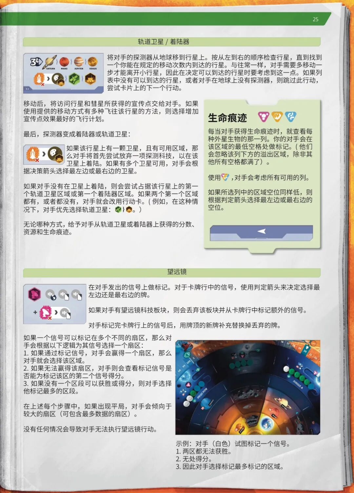
# 规则书第 25 页（扫描图 25)
轨道卫星 / 着陆器
〔图标:行动说明图标块(左下角有小字"5.1"〔?〕）：上排为“3“后接一个深色小图标（内有白色图形），其后为行星序列 SATURN、MARS、JUPITER、VENUS，行星之间有小型分隔箭头；下排为带红色叉号的航天飞机图标、”＞”、深色月球圆标（右下叠放橙色六边形着陆器图标）、分隔箭头、绿色六边形卫星图标、分隔箭头、橙黄色六边形着陆器图标。〕
将对手的探测器从地球移到行星上。按从左到右的顺序检查行星，直到找到一个你能在规定的移动次数内到达的行星。与往常一样，对手需要多移动一步才能离开小行星，因此在决定可以到达的行星时要考虑到这一点。如果列表中没有可以到达的行星，或者对手在地球上没有探测器，则跳过此行动，尝试卡片上的下一个行动。
移动后，将访问行星和彗星所获得的宣传点交给对手。如果使用提供的移动方式有多种飞往该行星的方法，则选择增加宣传点效果最好的飞行计划。
最后，探测器变成着陆器或轨道卫星：
〔图标:带红色叉号的航天飞机图标、"＞"(决策箭头)、深色月球圆标(右下叠放橙色六边形着陆器图标)。〕
如果该行星上有一颗卫星，且有可用区域，那么对手将首先尝试放弃一项探测科技，以在该卫星上着陆。如果有多个卫星可用，对手会根据决策箭头选择最左边或最右边的卫星。
如果对手没有在卫星上着陆，则会尝试占据该行星上的第一个轨道卫星区域或第一个着陆器区域。如果两个第一个区域〔原文如此〕都有，或者都没有，对手就会改用行动卡。（例如，在这种情况下，对手优先选择轨道卫星：〔绿色六边形·卫星图标〕＞〔橙黄色六边形·着陆器图标〕。）
无论哪种方式，给予对手从轨道卫星或着陆器上获得的分数、资源和生命痕迹。
〔以上正文为页面左栏,右侧为浅绿色侧栏框,内容如下。〕
生命痕迹
〔标题右侧三个三角形图标:粉色(内有白色分子状图形)、橙黄色(内有白色图形)、蓝色(内有白色杆状/细菌状图形)〕
每当对手获得生命痕迹时，就查看每种外星生物的那一列。你的对手会在该区域的最低空格处做标记。（他们会忽略该列下方的溢出区域，除非其他所有空格都满了）。
使用〔彩色三角图标(粉、橙、蓝三色组合的小图标)〕，对手会考虑所有可用的列。
如果所选列中的区域空位同样低，则根据判定箭头选择最左边或最右边的空位。
〔图:侧栏底部为判定箭头图示——蓝色横幅内一个白色左向箭头。〕
望远镜
〔图标:粉色六边形·望远镜(射电天线)图标;其右侧上排为三个灰色信号图标——第一个右下角叠有地球(深色圆内有大陆图形),第二、三个右下角各叠有一张卡牌;下排为"+",带红色叉号的粉色锯齿边望远镜图标,"＞"(决策箭头),灰色信号图标(右下角叠有一张卡牌)。〕
在对手发出的信号上做标记。对于卡牌行中的信号，使用判定箭头来决定选择最左边还是最右边的牌。
如果对手有望远镜科技板块，则会丢弃该板块并从卡牌行中标记额外的信号。
对手标记完卡牌行上的信号后，用牌顶的新牌补充替换掉丢弃的牌。
如果一个信号可以标记在多个不同的扇区，那么对手会根据以下逻辑为其信号选择一个扇区：
- 如果通过标记信号，对手会赢得一个扇区，那么对手就会选择该区域。
- 如果无法赢得该扇区，对手则会查看标记信号是否能为标记该区的第二个信号得分。
- 如果没有一个区段可以获胜或得分，则对手选择他标记最多的区段。
在上述每个步骤中，如果出现平局，对手会倾向于较大的扇区（可包含最多数据的扇区）。
没有任何情况会导致对手无法执行望远镜行动。
〔图:望远镜扇区拼板近景照片,可见扇区名 PROCYON 与 SIRIUS A,内圈行星标记 VENUS、MARS、SATURN 等,轨道上放置白色与绿色的标记物,左上与右上角分数轨道可见数字 98、99、100 与 16、17、18、19、20、21、22。〕
示例：对手（白色）试图标记一个信号。
- 两区都无法获胜。
- 无处得分。
- 因此对手选择标记最多标记的区域。〔原文如此〕
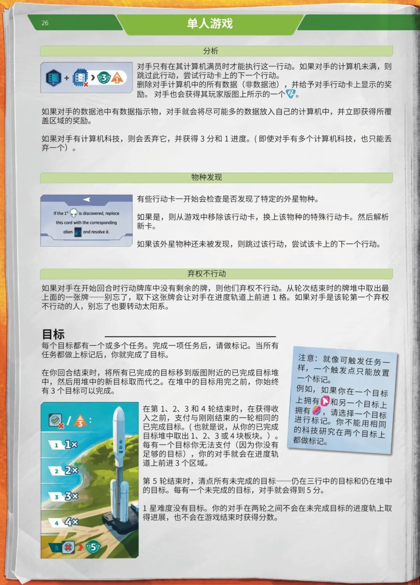
# 规则书第 26 页（扫描图 26)
单人游戏
分析
对手只有在其计算机满员时才能执行这一行动。如果对手的计算机未满，则跳过此行动，尝试行动卡上的下一个行动。删除对手计算机中的所有数据（非数据池），并给予对手行动卡上显示的奖励。 对手也会获得其玩家版图上所示的一个〔?图标〕。
如果对手的数据池中有数据指示物，对手就会将尽可能多的数据放入自己的计算机中，并立即获得所覆盖区域的奖励。
如果对手有计算机科技，则会丢弃它，并获得 3 分和 1 进度。（即使对手有多个计算机科技，也只能丢弃一个）。
物种发现
有些行动卡一开始会检查是否发现了特定的外星物种。
如果是，则从游戏中移除该行动卡，换上该物种的特殊行动卡。然后解析新卡。
如果该外星物种还未被发现，则跳过该行动，尝试该卡上的下一个行动。
示例卡牌文字
If the 1ˢᵗ〔外星人头像图标〕is discovered, replace this card with the corresponding alien〔深蓝色小方图〕and resolve it.
弃权不行动
如果对手在开始回合时行动牌库中没有剩余的牌，则他们弃权不行动。从轮次结束时的牌堆中取出最上面的一张牌——别忘了，取下这张牌会让对手在进度轨道上前进 1 格。如果对手是该轮第一个弃权不行动的人，别忘了也要转动太阳系。
目标
每个目标都有一个或多个任务。完成一项任务后，请做标记。当所有任务都做上标记后，你就完成了目标。
在你回合结束时，将所有已完成的目标移到版图附近的已完成目标堆中，然后用堆中的新目标取而代之。在堆中的目标用完之前，你始终有 3 个目标可以完成。
在第 1、2、3 和 4 轮结束时，在获得收入之前，支付与刚刚结束的一轮相同的已完成目标。（也就是说，从你的已完成目标堆中取出 1、2、3 或 4 块板块。）。〔原文如此〕每有一个目标你无法支付（因为你没有足够的目标），你的对手就会在进度轨道上前进 3 个区域。
第 5 轮结束时，清点所有未完成的目标——仍在三行中的目标和仍在堆中的目标。每有一个未完成的目标，对手就会得到 5 分。
1 星难度没有目标。你的对手在两轮之间不会在未完成目标的进度轨〔原文如此〕上取得进展，也不会在游戏结束时获得分数。
注意：就像可触发任务一样，一个触发点只能放置一个标记。
例如，如果你在一个目标上拥有〔粉色羽毛状图标〕和另一个目标上拥有〔彩色圆形图标〕，请选择一个目标进行标记。你不能用相同的科技研究在两个目标上都做标记。
〔图:页面顶部绿色横幅标题"单人游戏",左端印页码"26"〕
〔图:"分析"标题下左侧有一行动作图标条:深色六边形图标 + 计算机芯片图标(右下带红叉) > 绿色桂冠圈"3"图标、内含"1"的橙色三角图标;正文"一个"后有一个蓝色角标形图标,内为白色问号状符号〕
〔图:"物种发现"标题下左侧有一张行动卡局部示例图,顶部有白色左向箭头,卡面为英文文字(已录于"示例卡牌文字")〕
〔图:"目标"一节左侧有一张目标卡示例图:火箭发射塔与海岸背景;卡面自上而下为:带红叉的勾选图标 / 内含"3"的橙色三角图标 + 冒号;四行"1 1×""2 2×""3 3×""4 4×";底部一行"5〔内含红叉的深色方块图标〕 > 〔绿色桂冠圈"5"〕"〕
〔图:右侧蓝色便签样式注释框(正文已录为引用块);便签上有两处小图标:一处粉色羽毛状图标、一处彩色圆形图标〕
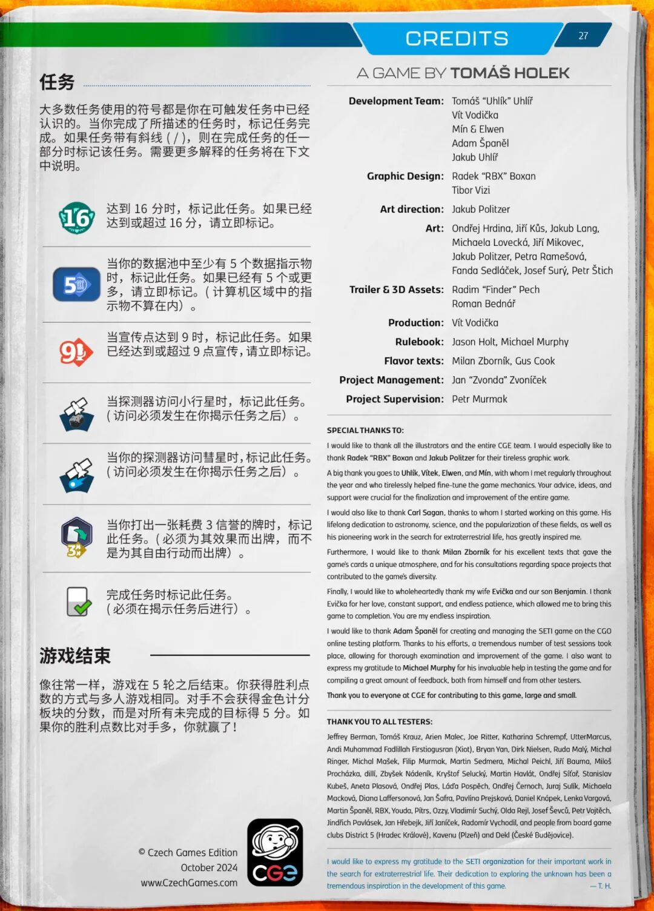
# 规则书第 27 页（扫描图 27)
页眉章节名：CREDITS
任务
大多数任务使用的符号都是你在可触发任务中已经认识的。当你完成了所描述的任务时，标记任务完成。如果任务带有斜线（/），则在完成任务的任一部分时标记该任务。需要更多解释的任务将在下文中说明。
- 达到 16 分时，标记此任务。如果已经达到或超过 16 分，请立即标记。
- 当你的数据池中至少有 5 个数据指示物时，标记此任务。如果已经有 5 个或更多，请立即标记。（计算机区域中的指示物不算在内）。
- 当宣传点达到 9 时，标记此任务。如果已经达到或超过 9 点宣传，请立即标记。
- 当探测器访问小行星时，标记此任务。（访问必须发生在你揭示任务之后）。
- 当你的探测器访问彗星时，标记此任务。（访问必须发生在你揭示任务之后）。
- 当你打出一张耗费 3 信誉的牌时，标记此任务。（必须为其效果而出牌，而不是为其自由行动而出牌）。
- 完成任务时标记此任务。（必须在揭示任务后进行）。
游戏结束
像往常一样，游戏在 5 轮之后结束。你获得胜利点数的方式与多人游戏相同。对手不会获得金色计分板块的分数，而是对所有未完成的目标得 5 分。如果你的胜利点数比对手多，你就赢了！
© Czech Games Edition
October 2024
www.CzechGames.com
CREDITS
A GAME BY TOMÁŠ HOLEK
- Development Team:
- Tomáš "Uhlík" Uhliř
- Vít Vodička
- Mín & Elwen
- Adam Španěl
- Jakub Uhliř
- Graphic Design:
- Radek "RBX" Boxan
- Tibor Vizi
- Art direction: Jakub Politzer
- Art: Ondřej Hrdina, Jiří Kůs, Jakub Lang, Michaela Lovecká, Jiří Mikovec, Jakub Politzer, Petra Ramešová, Fanda Sedláček, Josef Surý, Petr Štích
- Trailer & 3D Assets:
- Radim "Finder" Pech
- Roman Bednář
- Production: Vít Vodička
- Rulebook: Jason Holt, Michael Murphy
- Flavor texts: Milan Zborník, Gus Cook
- Project Management: Jan "Zvonda" Zvoníček
- Project Supervision: Petr Murmak
SPECIAL THANKS TO:
I would like to thank all the illustrators and the entire CGE team. I would especially like to thank Radek "RBX" Boxan and Jakub Politzer for their tireless graphic work.
A big thank you goes to Uhlík, Vítek, Elwen, and Mín, with whom I met regularly throughout the year and who tirelessly helped fine-tune the game mechanics. Your advice, ideas, and support were crucial for the finalization and improvement of the entire game.
I would also like to thank Carl Sagan, thanks to whom I started working on this game. His lifelong dedication to astronomy, science, and the popularization of these fields, as well as his pioneering work in the search for extraterrestrial life, has greatly inspired me.
Furthermore, I would like to thank Milan Zborník for his excellent texts that gave the game's cards a unique atmosphere, and for his consultations regarding space projects that contributed to the game's diversity.
Finally, I would like to wholeheartedly thank my wife Evička and our son Benjamin. I thank Evička for her love, constant support, and endless patience, which allowed me to bring this game to completion. You are my endless inspiration.
I would like to thank Adam Španěl for creating and managing the SETI game on the CGE online testing platform. Thanks to his efforts, a tremendous number of test sessions took place, allowing for thorough examination and improvement of the game. I also want to express my gratitude to Michael Murphy for his invaluable help in testing the game and for compiling a great amount of feedback, both from himself and from other testers.
Thank you to everyone at CGE for contributing to this game, large and small.
THANK YOU TO ALL TESTERS:
Jeffrey Berman, Tomáš Krauz, Arien Malec, Joe Ritter, Katharina Schrempf, UtterMarcus, Andi Muhammad Fadlillah Firstiogusran (Xiot), Bryan Yan, Dirk Nielsen, Ruda Malý, Michal Ringer, Michal Mašek, Filip Murmak, Martin Sedmera, Michal Peichl, Jiří Bauma, Miloš Procházka, dilli, Zbyšek Nádeník, Kryštof Selucký, Martin Havlát, Ondřej Sťař, Stanislav Kubeš, Aneta Plasová, Ondřej Plas, Láďa Pospěch, Ondřej Černoch, Juraj Sulík, Michaela Macková, Diana Laffersonová, Jan Šafra, Pavlína Prejsková, Daniel Knápek, Lenka Vargová, Martin Španěl, RBX, Youda, Pítrs, Ozzy, Vladimír Suchý, Olda Rejl, Josef Ševců, Petr Vojtěch, Jindřich Pavlásek, Jan Hřebejk, Jiří Janíček, Radomír Vychodil, and people from board game clubs District 5 (Hradec Králové), Kavenu (Plzeň) and Dekl (České Budějovice).
〔右栏底部蓝色斜体小字段〕
I would like to express my gratitude to the SETI organization for their important work in the search for extraterrestrial life. Their dedication to exploring the unknown has been a tremendous inspiration in the development of this game. — T. H.
图（纯视觉元素）
〔图: 页面顶端横幅:蓝色斜角条带内印白色大写"CREDITS",其右深蓝色小块内印页码"27"〕
〔图: "任务"列表第 1 项左侧图标:绿色锯齿边圆形徽章,内印数字"16"〕
〔图: 第 2 项图标:蓝色圆角方块,内印数字"5"及数据池小图标〕
〔图: 第 3 项图标:红色菱形,内印数字"9"和白色扩音器图形〕
〔图: 第 4 项图标:深蓝色弧形底上的灰色小行星与白色探测器〕
〔图: 第 5 项图标:深蓝色弧形底上的蓝色彗星(带彗尾)与白色探测器〕
〔图: 第 6 项图标:深色六边形内一张牌与绿色箭头,左下角金色菱形角标内印"3"及信誉小图标〕
〔图: 第 7 项图标:白色清单卡纸,右下角带绿色对勾〕
〔图: 左下角版权区右侧为黑色圆角方形 CGE 标志:戴头盔、带行星环的卡通星球形象,下方彩色字母"CGE"〕
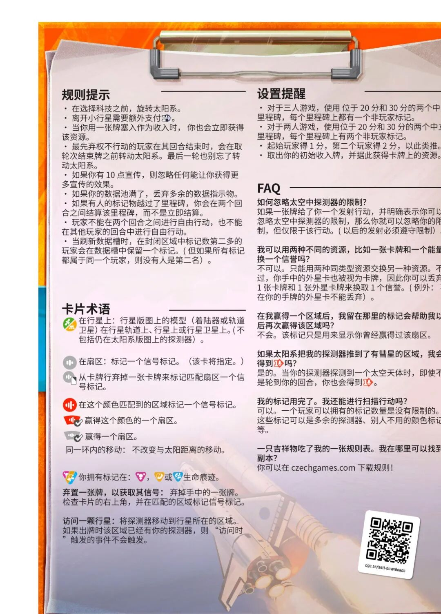
# 规则书第 28 页（扫描图 28)
版面说明：本页为双栏参考页，左栏为“规则提示”“卡片术语”，右栏为“设置提醒”"FAQ"。转录按左栏→右栏顺序。扫描图右缘略有裁切：凡紧贴右缘、无法确认其后是否缺字之处，以〔?〕标注；行内小图标以〔图标:…〕客观描述。
规则提示
- 在选择科技之前，旋转太阳系。
- 离开小行星需要额外支付 1〔图标:深色(藏青)小图标,内含白色"1"及白色斑点图案,具体图案难辨〕。
- 当你用一张牌塞入作为收入时，你也会立即获得该资源。
- 最先弃权不行动的玩家在其回合结束时，会在取轮次结束牌之前转动太阳系。最后一轮也别忘了转动太阳系。
- 如果你有 10 点宣传，则忽略任何能让你获得更多宣传的效果。
- 如果你的数据池满了，丢弃多余的数据指示物。
- 如果有人的标记物越过了里程碑，你会在两个回合之间结算该里程碑，而不是立即结算。
- 玩家不能在两个回合之间进行自由行动，也不能在其他玩家的回合中进行自由行动。
- 当刷新数据槽时，在封闭区域中标记数第二多的玩家会在数据槽中保留一个标记。（但如果所有标记都属于同一个玩家，则没有人是第二名）。
卡片术语
〔图标:绿/橙双色圆形图标,内有白色着陆器等图案〕在行星上：行星版图上的模型（着陆器或轨道卫星）在行星轨道上、行星上或行星卫星上。（不包括仍在太阳系版图上的探测器）。
〔图标:灰色圆形,内有白色信号柱图案〕在扇区：标记一个信号标记。（该卡将指定。）
〔图标:灰色圆形信号图标,叠加一张白色卡牌小图〕从卡牌行弃掉一张卡牌来标记匹配扇区一个信号标记。
〔图标:红色圆形,内有白色信号柱图案〕在这个颜色匹配到的区域标记一个信号标记。
〔图标:红色扇形图标,叠加灰色对勾〕赢得这个颜色的一个扇区。
〔图标:灰色扇形图标,叠加深色对勾〕赢得一个扇区。
同一环内的移动：不改变与太阳距离的移动。
〔图标:粉、黄、蓝三色交叠的盾形小图标〕你拥有标记在：〔粉色盾形图标〕,〔黄色盾形图标〕或〔蓝色盾形图标〕生命痕迹。
弃置一张牌，以获取其信号：弃掉手中的一张牌。检查卡片的右上角，并在匹配的区域标记信号标记。
访问一颗行星：将探测器移动到行星所在的区域。如果出牌时该区域已经有你的探测器，则“访问时”触发的事件不会触发。
设置提醒
- 对于三人游戏，使用位于 20 分和 30 分的两个中〔?〕里程碑，每个里程碑上都有一个非玩家标记。
- 对于两人游戏，使用位于 20 分和 30 分的两个中立〔?〕里程碑，每个里程碑上有两个非玩家标记。
- 起始玩家得 1 分，第二个玩家得 2 分，以此类推。
- 取出你的初始收入牌，并据此获得卡牌上的资源。
FAQ
如何忽略太空中探测器的限制？
如果一张牌给了你一个发射行动，并明确表示你可以忽略太空中探测器的限制，那么你就可以忽略你的限制，但仅限于该行动。（以后的发射必须遵守限制）。
我可以用两种不同的资源，比如一张卡牌和一个能量〔?〕换一个信誉吗？
不可以。只能用两种同类型资源交换另一种资源。不过，你手中的外星卡也被视为卡牌，因此你可以丢弃 1 张卡牌和 1 张外星卡牌来换取 1 个信誉。（例外：在你的手牌的外星卡不能丢弃）。
在我赢得一个区域后，我留在那里的标记会帮助我以后再次赢得该区域吗？
不会。该标记只是用来显示你曾经赢得过该扇区。〔原文如此:问句中作"区域",答句末作"扇区"〕
如果太阳系把我的探测器推到了有彗星的区域，我会得到 1〔图标:红色菱形/旗标状图标,内含白色"1"〕吗？
是的。当你的探测器探测到一个太空天体时，即使不是轮到你的回合，你也会得到 1〔图标:同上,红色图标内含白色"1"〕。
我的标记用完了。我还能进行扫描行动吗？
可以。一个玩家可以拥有的标记数量是没有限制的。这些标记可以是多余的探测器、别人不用的颜色标记等。
一只吉祥物吃了我的一张规则表。我在哪里可以找到副本？
你可以在 czechgames.com 下载规则！
页面视觉元素
〔图:页面顶部为写字板金属夹的照片;页面下半部背景隐约可见航天飞机(太空梭)图案;右下角斜贴一张白色二维码贴纸,贴纸下方印小字"cge.as/seti-downloads"。〕